Isto não é mais um catálogo — o M.A.L. já faz esse trabalho, e faz melhor.
Virou museu: peças da faculdade que não acharam onde encaixar em nenhuma outra página do site. Cada uma com sua placa, do jeito que a camada arqueológica sempre tratou o banco de dados original — só que agora esse é o formato de tudo aqui, não mais uma exceção escondida atrás de um botão.
peças 01–05 na página 1 · peças 06–10 na página 2 · peças 11–15 na página 3 · peças 16–18 na página 4 — na prateleira 3D, vira a página pra ver
Peça 01 · dez 2022 — jul 2026
O Acervo Anterior
Até pouco tempo, esta página era um catálogo de animes e jogos — nascido de um projeto de faculdade em Java, JSP e MySQL, de dezembro de 2022, depois reconstruído em JavaScript puro pra funcionar sem servidor nenhum. O M.A.L. faz o mesmo trabalho hoje. Então o catálogo se aposenta — e vira a primeira peça do museu que ele mesmo ajudou a inspirar.
Uma quarta obra foi criada — id 12 — mas nunca recebeu nome, autor ou estúdio. Continua vazia até hoje: uma cadeira reservada que ninguém chegou a ocupar.
Java, JSP, um DAO conversando com um MySQL local. Funcionava — só que apenas dentro de um quarto específico, com um servidor específico ligado. A versão em JavaScript que substituiu tudo isso — botões de adicionar, exportar, importar — também se aposenta agora. Também funcionava. Só que, hoje, em outro lugar, alguém já faz melhor.
Peça 02 · Programação Dinâmica
Fibonacci: ingênuo vs. memorizado
Duas formas de calcular a mesma sequência. A primeira recalcula tudo, sempre, do zero — funciona, mas fica lenta rápido. A segunda guarda o que já foi calculado, e só resolve o que falta. É o tipo de exercício que ensina programação dinâmica antes mesmo de dar nome a ela: a diferença aparece na velocidade, não na teoria.
fibonacci.py — recursão ingênua
def fib(n):
if (n <= 1):
return n
return fib(n-1) + fib(n-2)
for i in range(40):
print (fib(i))
ProgDinamicafibonacci.py — com memorização
def lookup_fibo(f,n):
if (f[n] > 0):
return f[n]
if (n <= 1):
f[n] = n
else:
f[n] = lookup_fibo(f, n-1) + lookup_fibo(f, n-2)
return f[n]
def memoria(f,n):
for i in range(0,n):
f[i] = -1
return lookup_fibo(f,n-1)
f={}
try:
for i in range (1,2000):
print (memoria(f,i))
except Exception as e:
print("numero muito alto!", e)
Mesmo memorizado, o Python tem um limite de profundidade de recursão — em algum lugar perto de i=1000 este script esbarra nele e cai no except. "número muito alto" não é bem sobre o número: é sobre a pilha de chamadas por trás dele.
Peça 03 · abril 2023 · Rosalind
DNA: os primeiros problemas do Rosalind
Rosalind é uma plataforma de exercícios de bioinformática: cada problema dá uma sequência de DNA ou RNA e pede uma transformação sobre ela. Estes quatro são os clássicos de quem está começando — contar, transcrever, complementar, encontrar um padrão — nessa ordem, um apoiado no anterior. Tem um quinto, mas ele não é dessa leva — veio antes de tudo, sozinho.
3.0 — Conteúdo de GC (antes de tudo)
Antes dos quatro abaixo — quase um ano antes — um problema Rosalind resolvido sozinho: Computing GC Content, o percentual de G+C de cada gene, usado aqui pra achar qual sequência de um FASTA tem a maior concentração. Nem veio do Colab como os outros três: o rodapé aponta pra um arquivo temporário local (tmp9wcbb0il.html), impresso direto do navegador. Não é o mesmo lote de março–abril de 2023 — é mais velho, e ficou sozinho até agora.
gc.py
def calculaGC(dna):
contCG=0
for i in dna:
if i == 'C' or i == "c" or i == "G" or i == "g":
contCG+=1
GCContent=(contCG/len(dna))*100
return GCContent
#GC CONTENT
arq=open("c:\\python-data\\rosalind_gc.txt","r")
geneMaior=0
GCContentMaior=0
gene=""
dna =""
dados ={}
first = True
for linha in arq:
linha = linha.strip()
if first != True:
if linha[0] == ">":
dados[gene]=dna
gene = linha[1:]
dna=""
else:
dna = dna+ linha
else:
first = False
gene = linha[1:]
dados[gene]=dna
for gene, dna in dados.items():
GCContent=calculaGC(dna)
if GCContent > GCContentMaior:
GCContentMaior=GCContent
geneMaior=gene
print(geneMaior)
print(GCContentMaior)
02 de maio de 2022
3.1 — Contar nucleotídeos
ex01.py
def lerArq(arquivo):
dna = ""
f = open(arquivo, "r")
linhas = f.readlines()
for linha in linhas:
linha = linha.strip()
dna = dna + linha
return dna
# A C G T
dna=lerArq('dna.txt')
contA = 0
contC = 0
contG = 0
contT = 0
for l in dna:
if (l == 'A'):
contA += 1
elif (l == 'C'):
contC += 1
elif (l == 'G'):
contG += 1
elif (l == 'T'):
contT += 1
else:
print ("caracter ",l,"fora do padrão")
print("{} {} {} {}".format(contA, contC, contG, contT))
dna.txt — 920 nucleotídeos
GGTCTGTGGGGGAATGAGGTAGGTGTAATTCAGATACAGATCCTTATC…
3.2 — Transcrever DNA em RNA
ex02.py
def dnaTorna(dna):
rnaTemp=''
for l in dna:
if (l!='T'):
rnaTemp += l
elif (l=='T'):
rnaTemp += 'U'
return rnaTemp
f = open ('rna.txt','r')
linhas = f.readlines()
dna=''
rna=''
for linha in linhas:
linha = linha.strip()
dna += linha
rna = dnaTorna(dna)
print(rna)
rna.txt — 936 nucleotídeos (a fita de DNA de entrada)
CTCAAGAAGACGGTCTTGTCATGTGCGAAGGTGTTACCATCTTCACAC…
3.3 — Complemento reverso
ex03.py
def lerArq(arquivo):
dna = ""
f = open(arquivo, "r")
linhas = f.readlines()
for linha in linhas:
linha = linha.strip()
dna = dna + linha
return dna
# A C G T
dna=lerArq('dnaRC.txt')
compl = ''
for l in dna:
if(l == 'T'):
compl = compl +'A'
elif(l == 'A'):
compl = compl +'T'
elif(l == 'C'):
compl = compl +'G'
elif(l == 'G'):
compl = compl +'C'
compl = compl [::-1]
print("{} ".format(compl))
Uma versão anterior deste script (ex03_py.bak) ainda apontava pro arquivo errado — dna.txt em vez de dnaRC.txt. Pequeno, mas é o tipo de erro que ensina a conferir a entrada antes de desconfiar da lógica.
dnaRC.txt — 885 nucleotídeos
GAGCCAGCTCATTGCGCAGGAATTTAGACCCCTTAAGGGTACCTGTGC…
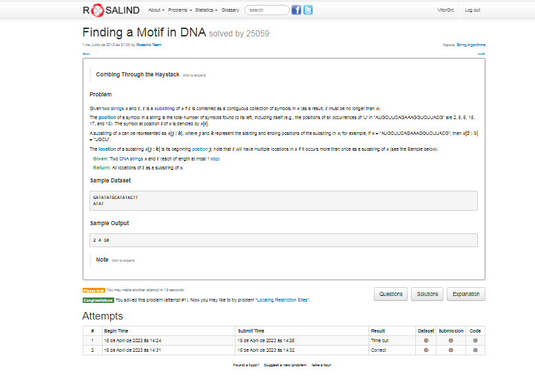
Rosalind — Complementing a Strand of DNA · resolvido na 3ª tentativa, 15 de março de 2023
3.4 — Encontrar um motivo em DNA
Motifindna.py
with open("rosalind_subs.txt", "r") as f:
s = f.readline().strip()
t = f.readline().strip()
positions = []
for i in range(len(s)):
if s[i:i+len(t)] == t:
positions.append(str(i+1))
print(" ".join(positions))
rosalind_subs.txt
GATATATGCATATACTTATAT
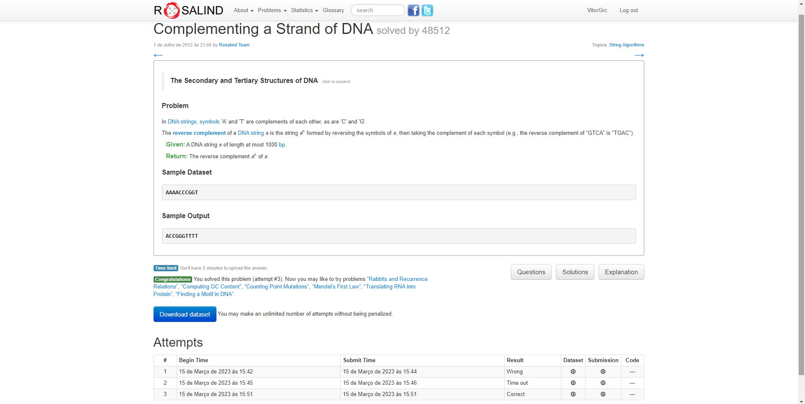
Rosalind — Finding a Motif in DNA · resolvido na 2ª tentativa, 15 de abril de 2023
Fios soltos —Motif.fasta (mais um padrão repetido, 114 nt) e rosalind_prot.txt (uma sequência de RNA de 9.162 nt, esperando virar proteína — o próximo problema sugerido). Vieram junto nessa leva, mas sem script ainda. Ficam aqui, à espera.
Peça 04 · outubro 2023 · Projeto Integrador · trabalho em grupo
RescueTechSolutions: um Corpo de Bombeiros que não existe
Um Projeto Integrador de gerenciamento de projetos — em grupo, com Jéssica Aparecida Pessoa, Nauam Moises da Cruz Garcia e Vitor Gabriel Ramos Campos simulando o ciclo inteiro do PMBOK pra uma empresa de software que também não existe: abertura, plano de gerenciamento, autorização, aceitação e encerramento — cinco documentos completos por trás do que está resumido aqui. O time deu nome de personagem emprestado pra cada stakeholder fictício. Um patrocinador chamado Shinra Kusakabe, de Fire Force, autorizando um software pro Corpo de Bombeiros não é coincidência.
O elenco
Chronya Bunninull — Gerente de Projeto
Clover Lenfield — Especialista em Requisitos
Caim Dracdemis — Especialista em Comunicação e Integração
Joel Lore — Especialista em Treinamento e Documentação
Ivy Claire — Gerente de Implantação
Ellie Eviline — Suporte Técnico e Manutenção Contínua
Shinra Kusakabe — Patrocinador, representando o Corpo de Bombeiros
Geralt Minakami — Representante da Equipe de Desenvolvimento
CEO Brojack — autorização e orçamento
Gabriel Mightli — Coordenador do Encerramento
Danher — Responsável pelo Gerenciamento de Riscos
Chris — Responsável pelo Orçamento e Recursos
Alana — Responsável pelo Cronograma
Dwight Crow — Responsável pela Qualidade
A EAP — quatro entregas, dezoito pacotes de trabalho
Software RescueTechSolutions (8 pacotes) · Implantação do Software (5) · Documentação e Manuais do Usuário (3) · Comunicação e Treinamento Contínuos (2).
Essa é a EAP do produto. A Declaração de Escopo revela outra, do processo, em quatro fases — a primeira leva do Termo de Abertura só ia até a execução: Iniciação · Planejamento · Execução · Encerramento (encerramento do projeto, termo de aceitação, lições aprendidas, documentação final).
Fora do escopo
A Declaração de Escopo também diz o que o RescueTechSolutions não é — e é disciplinada nisso: não realiza operações de resgate em si, apenas dá suporte à gestão e coordenação; não oferece treinamento intensivo em combate a incêndios; não desenvolve hardware personalizado; não cobre treinamento em segurança cibernética, apesar de mencionar a preocupação com dados. Um projeto de faculdade que sabia dizer não.
Acompanhamento semanal, valor agregado, dois índices e três cores.
Indicador
Verde
Amarelo
Vermelho
SPI
≥ 1.0
≥ 0.9 < 1.0
< 0.9
CPI
≥ 1.0
≥ 0.9 < 1.0
< 0.9
Os diagramas
A única peça de design de sistema no meio de tanto formulário — cinco vistas UML do mesmo software imaginado.
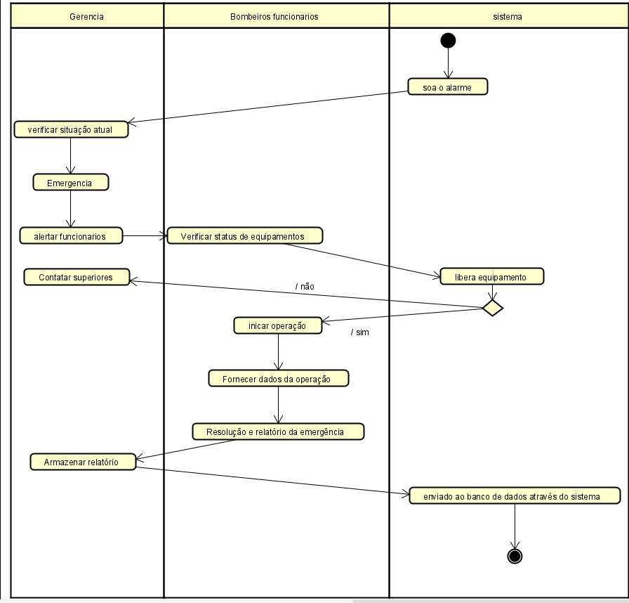
Diagrama de Atividades — do alarme soando até o relatório chegar ao banco de dados
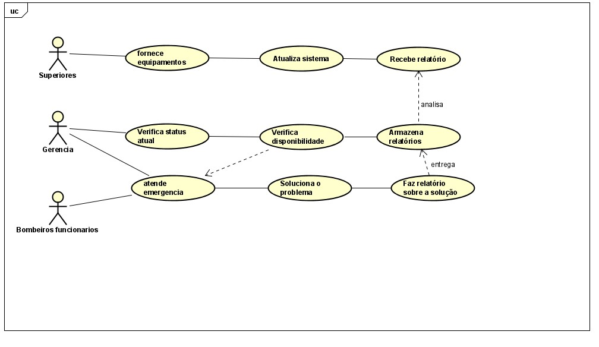
Diagrama de Casos de Uso — superiores, gerência e bombeiros, cada um com seu papel
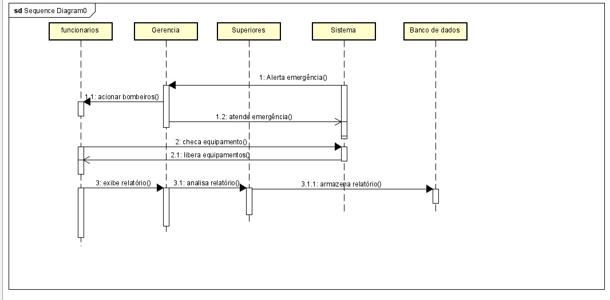
Diagrama de Sequência — do alerta ao banco de dados, chamada por chamada
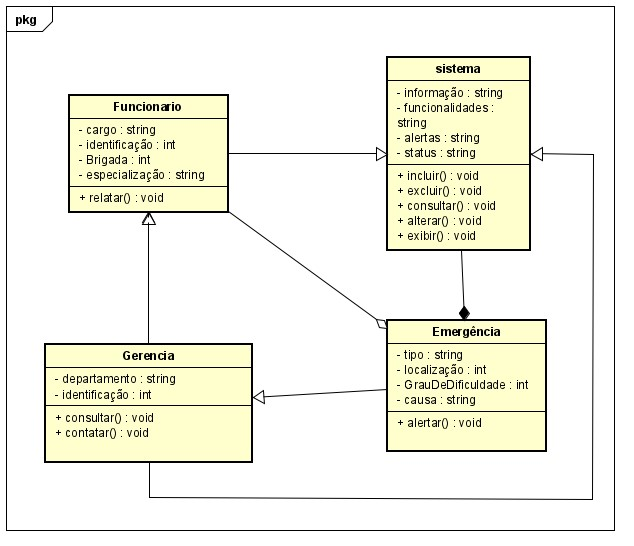
Diagrama de Classes — Funcionário, Gerência, Emergência e Sistema
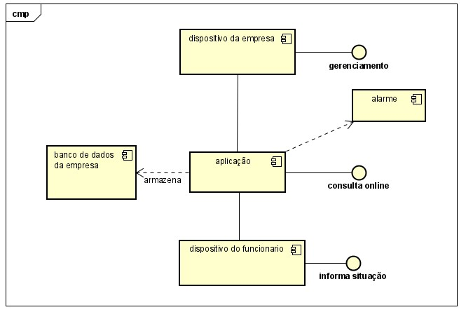
Diagrama de Componentes — dispositivos, aplicação, alarme e banco de dados
Tarefa abandonada, tarefa terminada
Dois arquivos, o mesmo esqueleto — quinze tarefas do módulo 1, Análise de Requisitos. Um fica no meio do caminho: só as três primeiras ganham nome (elaborar o questionário, aplicá-lo, transcrevê-lo), as outras doze ficam em branco, e os módulos 2, 3 e 4 nunca chegam a começar. O outro é o gêmeo que terminou — rede PERT completa, cronograma de 73 dias, barras coloridas de verdade.
Caminho crítico — T1 → T2 → T3 → T5 → T6 → T7 → T8 → T10 → T12 → T13 → T14 → T15, do dia 1 ao dia 73, sem folga em nenhum elo.
Com folga — T4, T9 e T11 correm em paralelo ao caminho principal, cada uma com espaço pra atrasar sem atrasar o projeto inteiro.
Terminado não é o mesmo que nomeado, porém: mesmo na versão completa, só as três primeiras tarefas têm descrição de verdade — da quarta em diante é só "Tarefa 4", "Tarefa 5"... a estrutura chegou ao fim antes do vocabulário.
O plano de gerenciamento do cronograma (PGT) que devia amarrar os dois é sobretudo processo, não substância — metodologia genérica, uma lista de ferramentas (MS Project, Jira, Trello, Slack) e mais uma tabela de papéis nunca preenchida.
O custo, por pessoa e por peça
A versão final do Plano de Custos — diferente de uma cópia anterior, essa incompleta — foi levada a sério: nomeou ferramentas (ProjectMaster 365, CloudSimi), abriu um cargo novo, Analista Financeiro, e estimou o projeto peça por peça.
Pessoa
Valor-hora
Horas
Total
Chronya Bunninull
R$ 180
7
R$ 1.260
Clover Lenfield
R$ 120
21
R$ 2.520
Caim Dracdemis
R$ 100
21
R$ 2.100
Joel Lore
R$ 110
60
R$ 6.600
Ivy Claire
R$ 150
40
R$ 6.000
Ellie Evilline
R$ 80
20
R$ 1.600
Mais uma estimativa por funcionalidade — gestão de recursos, rastreamento de incidentes, relatórios e análise, integração de dados, interface, segurança, documentação — somando R$ 1.350.000 dos R$ 3.000.000 do projeto inteiro. Assinado por Shinra Kusakabe e Chronya Bunninull, 30 de novembro de 2023.
A reserva
O Plano de Gerenciamento de Riscos, na versão certa, também não é genérico: reserva de contingência de 5% do orçamento e 5% do cronograma (20 dias úteis), um procedimento de controle com checklist próprio, assinado em 17 de outubro de 2023. A estrutura de categorias de risco foi pensada com cuidado — Organizacional, Gerenciamento do Projeto, Técnico, Externo, cada uma com suas subcategorias.
Mas o Registro de Riscos em si — a lista de riscos específicos que essa estrutura existia pra receber — nunca ganhou uma linha. A categoria pronta, esperando um risco que não chegou a ser escrito.
A matriz das comunicações
O único documento genérico do projeto levado até o fim — descreve, em detalhe real, pra que serve cada um dos outros documentos que passaram por essa peça. Entre o Termo de Abertura assinado e o Registro de Riscos vazio, o padrão certo não é "ficou tudo pela metade": o planejamento — termos, planos, orçamento — quase sempre foi levado a sério. O que parou no ar foram as ferramentas de acompanhamento contínuo, os registros e checklists que só existem se o projeto continuar rodando depois de criados.
O encerramento
Versão
Autor
Descrição
1.0
Vitor Gabriel Ramos Campos
Estabelecimento de todos os tópicos.
2.0
Jéssica Aparecida Pessoa
Estabelecimento de todos os tópicos e formatação.
Das considerações finais: "o desenvolvimento de software é uma área que desempenha um papel crucial em diversos setores, incluindo a segurança pública" — um projeto de faculdade levando a sério, por um instante, o peso do que estava simulando.
o único elemento visual entre os cinco documentos — cabeçalho do Termo de Encerramento
Peça 05 · cinco fragmentos, nenhuma ligação
Fragmentos
Cinco arquivos soltos, sem projeto em comum e sem tentativa de fingir que têm. Não são um trabalho — são o que sobra ao redor de um: anotação de aula, rascunho de prova, comando copiado no calor da hora, um banco de dados exportado e nunca mais aberto, uma comparação de ferramentas que não virou projeto nenhum. Cada placa fala só de si.
Linux — comandos básicos
Novo Documento de Texto.txt
usuario: root
password: fatec
whoami: demonstra o usuario.
pwd: diretório.
ls: lista.
touch: adciona arquivos.
mkdir: cria pastas.
chmod +x script.py
cd /tmp: muda o diretório.
grep: mostra arquivos que seguem um padrão. -c: conta ocorrências.
wc -l: mostra quantas linhas tem.
|: redireciona a saída de um comando pra entrada de outro.
$?: se o comando der certo 0, se der erro, diferente de 0
/dev/null: buraco negro.
poweroff: desliga a máquina.
No meio da lista, um desvio: aptitude -vv moo responde "Didn't I already tell you that there are no Easter Eggs in this program?" — e em -vvv, só "Stop it!". O arquivo termina num link solto pra uma plataforma de aulas, sem dizer pra onde leva.
aptitude moo, emulado
$ ▌
A piada de verdade vai além do que o arquivo mostrou: sete níveis ao todo, terminando numa referência ao Pequeno Príncipe. Clique quantas vezes quiser.
MySQL / MariaDB
Aula 1 comandos básicos.txt
MariaDB [(none)]> create database aula;
MariaDB [(none)]> use aula;
create table autor (cod_autor integer not null, nome varchar(30) not null,
nascimento date null, primary key (cod_autor));
create table editora (cod_editora integer not null, razao varchar(35) not null,
cnpj varchar(16) not null, endereco varchar(30) not null, cidade varchar(25) not null,
primary key (cod_editora), unique key (cnpj));
create table livro (titulo varchar(30) not null, cod_autor integer not null,
cod_editora integer not null, valor real not null, publicado date null,
primary key (titulo, cod_autor),
foreign key (cod_autor) references autor (cod_autor),
foreign key (cod_editora) references editora (cod_editora));
Uma livraria — autor, editora, livro — até a metade do arquivo. Depois, sem transição nenhuma, o exercício muda pra uma clínica: medicos, pacientes, consultas, com as mesmas chaves estrangeiras amarrando tudo. Duas aulas diferentes, aparentemente, salvas no mesmo arquivo.
Uma coincidência real, sem virar fio narrativo: é a mesma tecnologia por trás do banco de dados original da Peça 01 — só que essa aqui é de uma aula qualquer, não tem nada a ver com Ícaro nem com o catálogo antigo.
Gerenciamento de Riscos — outro exemplo
Avaliação Qualitativa de riscos categoriza por probabilidade e impacto — baixo, médio, alto — numa matriz de risco. Avaliação Quantitativa vai além: calcula um valor esperado, probabilidade vezes impacto financeiro.
O exemplo aqui não é o RescueTechSolutions — é um software de melhoria pra academia. Risco: atraso na entrega. Suposição: 20% de chance, 100 clientes em potencial perdidos, R$ 50.000 de impacto. 20% × R$ 50.000 = R$ 10.000 de valor esperado.
O arquivo pede pelo menos três situações de risco com seus mecanismos de acompanhamento — e corta bem onde a resposta deveria começar. Fica em aberto, do jeito que chegou.
Uma terceira aparição da mesma dupla — phpMyAdmin exportando MariaDB — depois do Linux/clínica acima e do catálogo original da Peça 01. Sem PHP, sem formulário, nada que de fato consultasse essa tabela: só a estrutura e sete produtos de mercado, gravados em 14 de dezembro de 2022. Os ids pulam 2, 4 e 8 — o AUTO_INCREMENT parado em 11 confirma que existiram dez linhas, três já apagadas antes desse dump.
Ferramentas de IA — comparação
Atividade Avaliativa 13/5
Três ferramentas, três finalidades: Gencraft gera imagens (dez por dia, de graça, sem plano), Shazam identifica música pelo som, ChatGPT gera texto a partir de uma base de dados. A avaliação é só de acessibilidade e finalidade — nada de comparar qualidade de resultado, só o que cada uma faz e quanto custa pra usar.
Peça 06 · março – junho de 2023 · Escola de Inovadores
Tesla, entre o comprovante e a torre que não terminou
Dois registros que não vêm do mesmo lugar, juntos aqui só pelo tema. De um lado, a Escola de Inovadores — extracurricular, 16ª edição, programa da INOVACPS, o braço de inovação do Centro Paula Souza, sete módulos online de 30 de março a 3 de junho de 2023. De outro, uma pesquisa independente sobre Nikola Tesla, que não nasceu de nenhuma tarefa desse curso. A ligação entre os dois é só conceitual: Tesla como gênio da inovação — o único paralelo que dá pra traçar.
A inscrição
Confirmada em 13 de março de 2023, ingresso nº 34698152, categoria participante, evento inteiramente online.
Sete módulos
Engajar & Mapear, Entender, Testar — e mais quatro depois disso —, cada um encerrado com uma tela de presença validada. Não é o conteúdo do curso, é a prova de ter passado por ele: sete capturas de tela, uma por módulo.
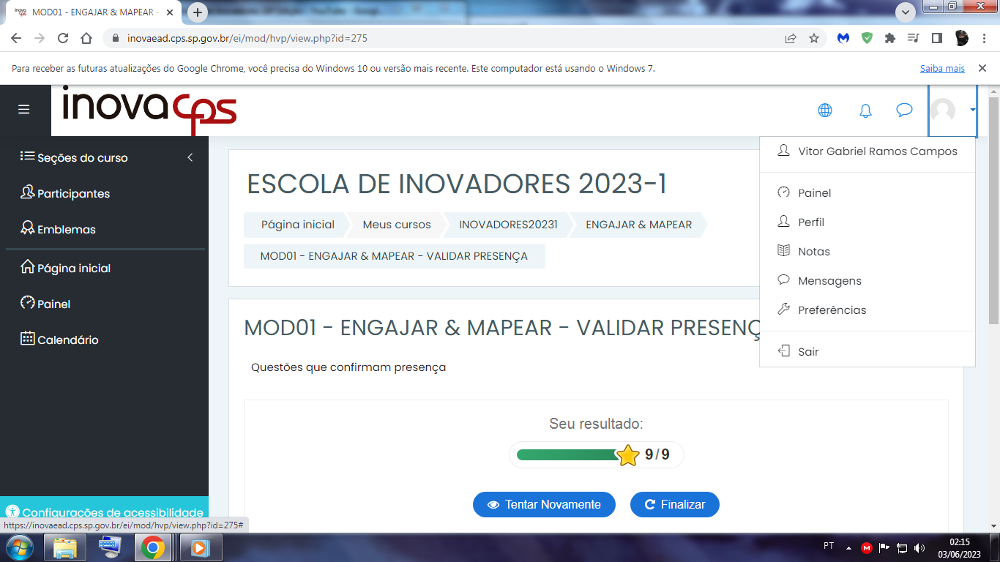
MOD01 — Engajar & Mapear
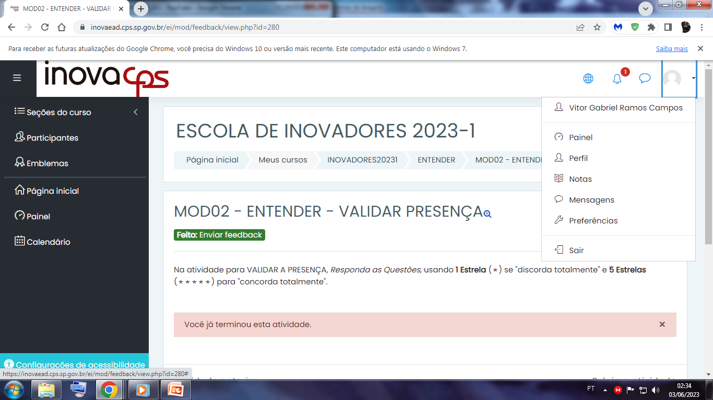
MOD02 — Entender
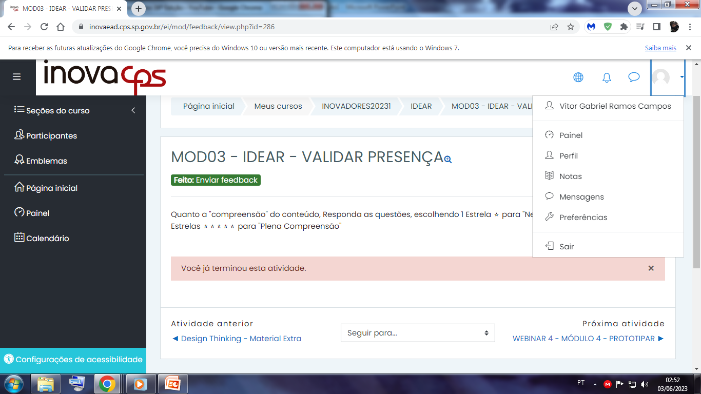
MOD03
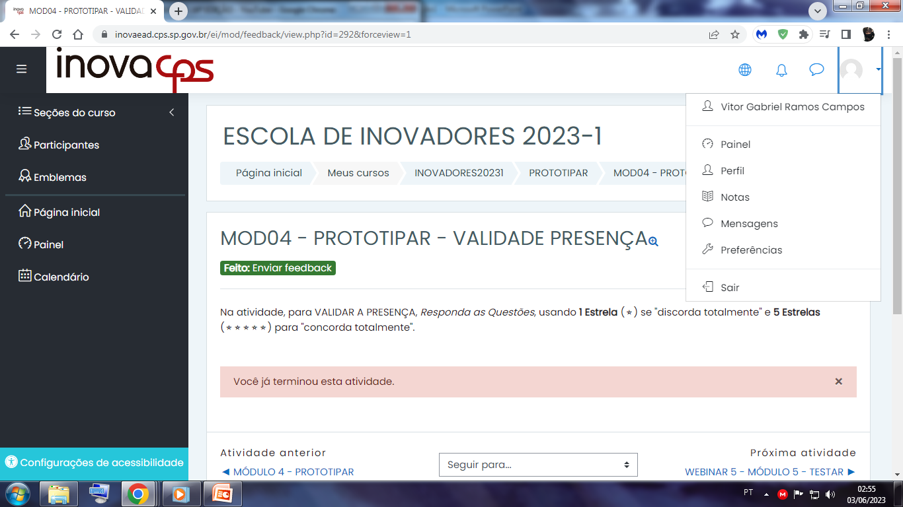
MOD04
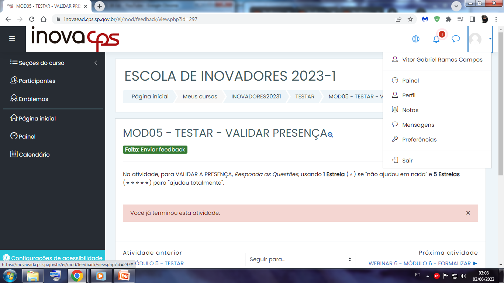
MOD05 — Testar
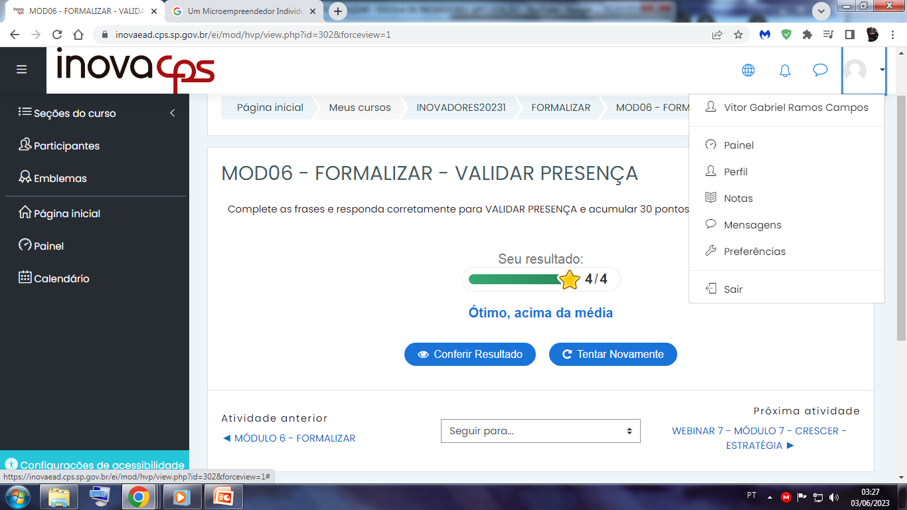
MOD06 — Formalizar
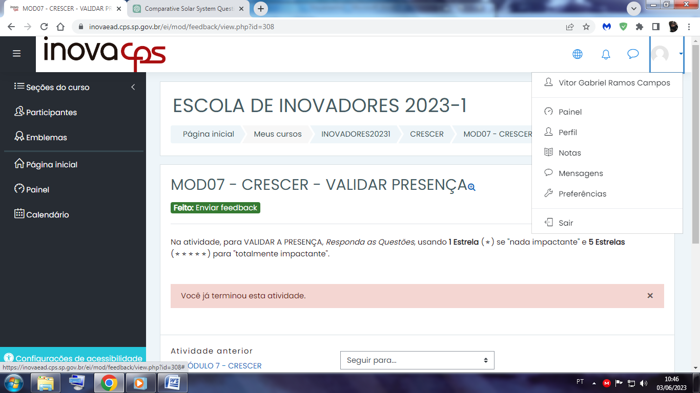
MOD07
◆ daqui pra frente, pesquisa à parte — sem relação com o curso acima, além do tema ◆
Nikola Tesla
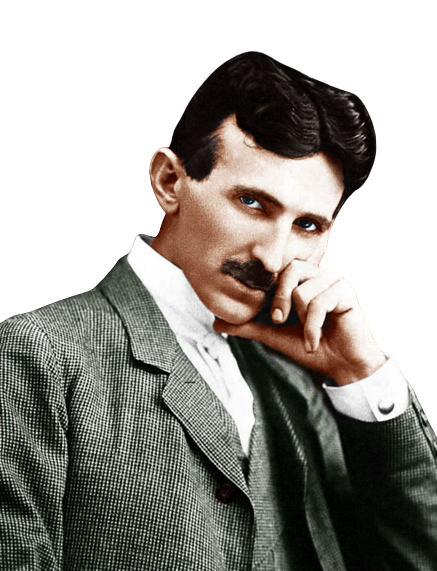
pesquisada, colorida, recortada — e nunca usada em lugar nenhum até agora
O trabalho percorre as empresas de Tesla, sua história, os maiores feitos, as características que o texto destaca, e fecha com referências reais — quatro fontes, não uma bibliografia de enfeite.
Empresas
Tesla Electric Company (1887), motores e transformadores. Em 1900, a Tesla Wardenclyffe Company — criada pra erguer a torre de transmissão de energia sem fio. Fechou em 1917, antes do projeto terminar, por falta de dinheiro. Antes disso, passou pela Edison Machine Works e pela Westinghouse Electric Company.
Maiores feitos
Corrente alternada — mais eficiente que a corrente contínua de Edison, virou padrão mundial de distribuição de energia. O motor elétrico de corrente alternada. O transformador que leva seu nome. Experimentos com raios-X, entre os primeiros a perceber o potencial pra medicina. Uma patente de 1898 pra um barco controlado por rádio — marco no controle remoto.
Características, segundo o trabalho
Criatividade, perspicácia técnica, tenacidade, paixão, foco, humildade, curiosidade — sete qualidades, um parágrafo cada no original. A tenacidade é a que mais ecoa: ele seguia nos projetos mesmo quando nada saía como planejado.
Referências
A biografia de W. Bernard Carlson, a de Robert Lomas, a biografia ilustrada de Carol Dommermuth-Costa, e o documentário Tesla: Master of Lightning, da PBS.
A torre de Wardenclyffe está lá, coberta duas vezes — nas empresas e na história: o projeto mais ambicioso de Tesla, energia sem fio pro mundo inteiro, fechado antes de terminar, por falta de dinheiro. O próprio trabalho já registra o que esse museu também guarda: não é força de expressão chamar isso de eco — uma coisa que caiu por falta de recurso, não de ideia, insistindo em arder de novo, aqui, numa vitrine que existe justamente pra isso.
Peça 07 · maio – junho de 2020 · a peça mais antiga do acervo
URI: o nome que morreu, a plataforma que não
O URI Online Judge não fechou — virou beecrowd, e continua no ar até hoje sob esse nome. O que morreu foi a marca: esse logo, essa interface, esse "URI" no canto superior esquerdo. É esse nome extinto que essas duas capturas de tela preservam — não a plataforma em si, só a pele que ela já teve.
O perfil
Vitor Campos, FATEC, Brasil — posição 54.236ª, 134.844 pontos, 36 problemas resolvidos em 36 tentativas, 136 submissões, tudo em C++17. Ativo desde 06/05/2020: a data mais antiga de qualquer coisa nesse museu.
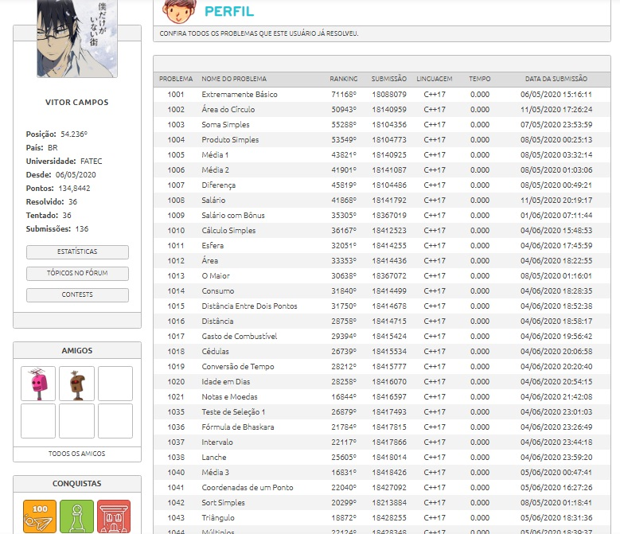
problemas 1001–1044 — a série clássica de iniciante
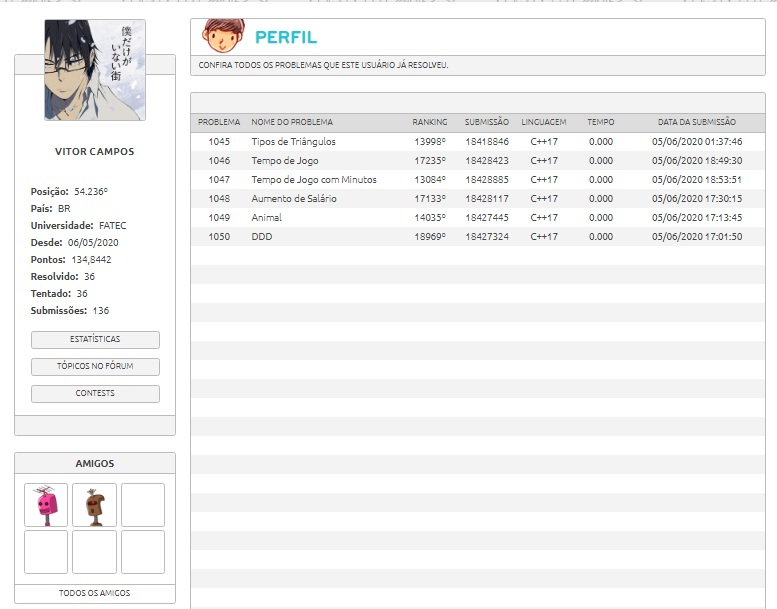
problemas 1045–1050, submetidos em 05/06/2020
Os problemas
Extremamente Básico, Área do Círculo, Soma Simples, Produto Simples, Média 1 e 2, Diferença, Salário, Salário com Bônus, Cálculo Simples, Esfera, Área, O Maior, Consumo, Distância Entre Dois Pontos, Distância, Gasto de Combustível, Cédulas, Conversão de Tempo, Idade em Dias, Notas e Moedas, Teste de Seleção 1, Fórmula de Bhaskara, Intervalo, Lanche, Média 3, Coordenadas de um Ponto, Sort Simples, Triângulo, Múltiplos, Tipos de Triângulos, Tempo de Jogo, Tempo de Jogo com Minutos, Aumento de Salário, Animal, DDD — trinta e seis problemas, entrada e saída, condicional, laço, sem nada além disso ainda.
Peça 08 · SESC · clube de leitura
Clarice, um desafio, dois livros de prêmio
Do clube de leitura do SESC — não é FATEC, não é curso, é comunidade. Três livros como lembrança de leitura, e uma pesquisa que nasceu de outro motivo: um desafio com premiação, sobre a vida de Clarice Lispector.
O clube
O lustre, de Clarice Lispector — o romance provavelmente lido no clube. Histórias que os jornais não contam, de Moacyr Scliar (L&PM, 2017). E as Memórias Póstumas de Brás Cubas, de Machado de Assis, 1880 — o único dos três já em domínio público. Citados aqui como lembrança, não reproduzidos: são obra de outra pessoa, não deste museu.
O desafio
Um desafio com premiação no SESC, tema Clarice Lispector: quem respondesse mais perguntas corretas sobre a vida dela, vencia. A pesquisa que segue foi feita pra isso — fundo demais pro que qualquer resenha exige, a ponto de chegar até a família dela. Funcionou: o prêmio foram dois livros da Clarice, dentro de uma caixa de proteção personalizada.
A pesquisa
Chaya Pinkhasovna Lispector — o nome por trás de "Clarice" — nasceu em 10 de dezembro de 1920, na aldeia de Chechelnyk, região da Podólia, Ucrânia. Escritora e jornalista brasileira, judia, do modernismo, 37 obras ao todo. Morou em Maceió, Recife e no Rio de Janeiro, depois Estados Unidos, Itália, Suíça e Inglaterra.
Antes do Brasil
Em 1910, o aumento dos pogroms levou Pinkhas, pai de Clarice, a aceitar a ideia de emigrar. Em 1918, a pobreza levou a família a Haisyn, ainda na Podólia. Em 1919 — um ano antes de Clarice nascer — sua mãe, Mania, foi estuprada por um grupo de soldados, que teriam lhe transmitido sífilis. A primeira tentativa de emigração falhou; mudaram-se pra Chechelnyk, onde Clarice nasceria. No inverno de 1921 deixaram a Ucrânia pelo rio Dniestre até Soroca, então romena, hoje moldava, onde viveram num albergue. Em 27 de janeiro de 1922, o consulado russo em Bucareste concedeu passaportes pro Brasil — Hamburgo, Budapeste, Praga, e por navio até Maceió, onde a irmã de Mania, Zicela, e o marido dela, José Rabin, esperavam.
Infância e primeiros passos
Aos quatro anos, em 1924, entrou no jardim de infância. Em 1925 mudou-se com a mãe e as irmãs pra Recife, pouco depois do pai. Aos sete, em 1928, aprendeu a ler e escrever. Em 1930, inspirada por uma peça que tinha visto, escreveu sua primeira peça teatral — "Pobre menina rica", três atos, páginas hoje perdidas. Em 1931 mandou contos pra página infantil do Diário de Pernambuco; não foram publicados. Sua mãe morreu em 1930, aos 42 — possivelmente pela sífilis do estupro.
Rio de Janeiro e carreira
Tinha 15 anos quando chegou ao Rio, em 1935; estudou Direito na Universidade do Brasil. O primeiro conto publicado foi "Triunfo", na revista Pan, 1940 — mesmo ano em que o pai morreu, aos 55. Namorou a partir de 1942, trabalhou como redatora do jornal "A Noite". O primeiro livro, Perto do coração selvagem, recebeu o Prêmio Graça Aranha. Casou com Maury Gurgel Valente em 1943; separaram-se em 1959. Na Itália, foi voluntária da Força Expedicionária Brasileira. Pedro, o primeiro filho, nasceu na Suíça em 1948 — diagnosticado depois com esquizofrenia. Em 1952 assinava "Entre Mulheres" no jornal "Comício" como Tereza Quadros. Paulo, o segundo filho, nasceu nos Estados Unidos em 1953. De volta ao Rio em 1959, assinava "Correio feminino" no "Correio da Manhã" como Helen Palmer, e colunou ainda no "Jornal do Brasil".
Os últimos anos
Em 1966, dormiu com um cigarro aceso, provocou um incêndio no próprio quarto e quase perdeu a mão direita — meses internada. Em 1974, uma mordida de cachorro no rosto exigiu cirurgia com Ivo Pitanguy. Morreu de câncer em 9 de dezembro de 1977, um dia antes de completar 57 anos, no Rio. Sepultada no Cemitério Israelita do Caju, dois dias depois.
Além dela
Irmãs: Tania Lispector Kaufmann (1915) e Leah — Elisa Lispector (1911). A tia Zicela Krimgold e o tio José Rabin, primos-irmãos entre si, os que esperavam a família em Maceió. E um detalhe do tipo que só aparece quando a pesquisa vai fundo pra valer: o cachorro de Clarice se chamava Ulisses.
Fontes
Instituto Moreira Salles (claricelispectorims.com.br), um repositório acadêmico da UFPE, e reportagens — entre outras buscas, inclusive pra achar o nome do cachorro.
Peça 09 · 2022 · Trabalho de Graduação · em dupla
PDAES: a dúvida que vira aula
Trabalho de Graduação do curso de Análise e Desenvolvimento de Sistemas, FATEC Ourinhos, 2022 — em dupla, com Letícia da Silva Careli e Vitor Gabriel Ramos Campos, orientação de Viviane de Fátima Bartholo. A ideia: um portal de discussão pra quem trava em Engenharia de Software. Brainly serviu de referência pelo design leve e acessível; Stack Overflow, pelo sistema de tags que filtra dúvida por dúvida — mas nenhum dos dois ensina a disciplina especificamente. A diferença que o projeto tenta fazer valer está numa frase do próprio resumo: "em vez de simplesmente obter a resposta, ela é lecionada."
Os modelos
Dois diagramas atravessam o projeto inteiro — entidade-relacionamento e casos de uso, a dupla clássica que qualquer Engenharia de Software usa pra desenhar o sistema antes da primeira linha de código (GUEDES, 2018). Na primeira versão, o banco ainda chamava as matérias de materias e não sabia nada sobre dúvida nenhuma — só instituições, cursos, professores, alunos, o esqueleto genérico de qualquer plataforma acadêmica. A versão final é outra coisa: dezesseis tabelas, com DUVIDAS, TAGS, TOPICOS e MIDIAS formando a espinha dorsal específica de um fórum de perguntas. Só que, mesmo nessa versão final, nenhuma tabela chegou a se chamar RESPOSTAS — o caso de uso já sabia que um moderador ia cadastrar respostas; o banco, na hora de guardar essas respostas, ainda não tinha decidido onde.
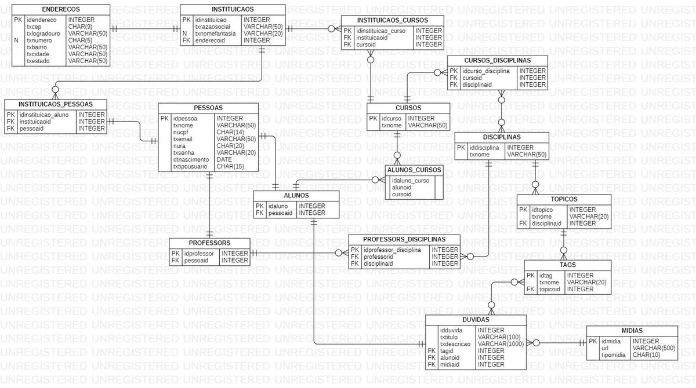
modelo de entidade-relacionamento — versão final, dezesseis tabelas
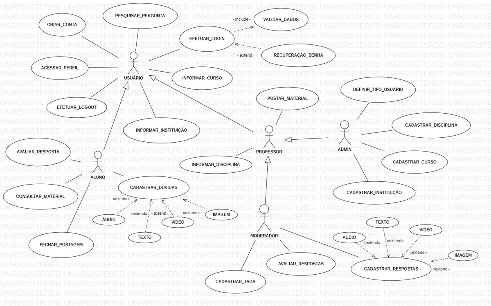
diagrama de casos de uso — versão final, cinco atores
A stack
Front-end em HTML, CSS e Bootstrap, Node.js e JavaScript por cima. Back-end em Laravel, banco modelado no MySQL Workbench, editor VSCode. Prototipação no Figma, seguindo UX/UI Design — telas antes do código. Gerenciamento de projeto pelas diretrizes do PMBOK; versionamento no Git e GitHub, artigo e código sob o mesmo controle.
instituições, cursos, disciplinas, tipo de usuário, relatórios
Vinte e três ao todo. O último item da lista, emitir relatórios, carrega uma anotação que nenhum dos outros vinte e dois tem: "(verificar)" — entre planejado e confirmado, a única linha do documento que admite a própria dúvida. Não funcionais: backup, interface só via web, segurança — três linhas sem número, o tipo de requisito que não aparece em tela nenhuma mas decide se o sistema aguenta o uso de verdade.
O que rodou
Nem tudo saiu do papel. Das vinte e três funcionalidades planejadas, só as telas principais chegaram a existir de verdade — login, cadastro de usuário, cadastro de dúvidas e de respostas —, testadas pelos próprios colaboradores do projeto contra os requisitos propostos. O motivo, sem rodeio: pouco tempo por dia, reuniões curtas e esparsas com a orientadora, e ferramentas e linguagens aprendidas na prática, ao mesmo tempo em que precisavam ser usadas pra valer.
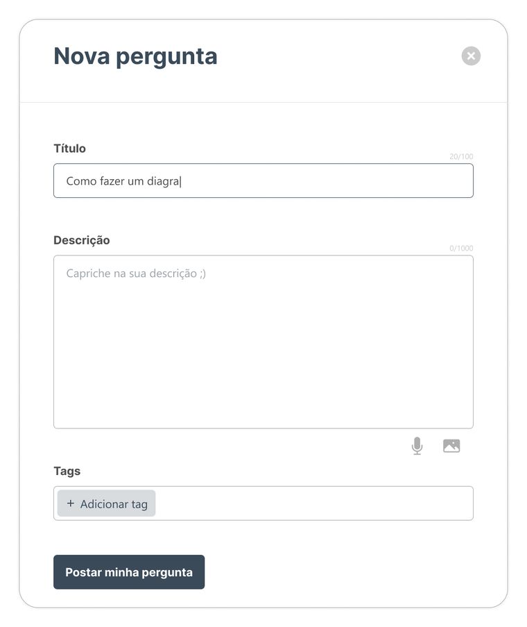
Nova pergunta — cadastro de dúvida, uma das telas que realmente rodou
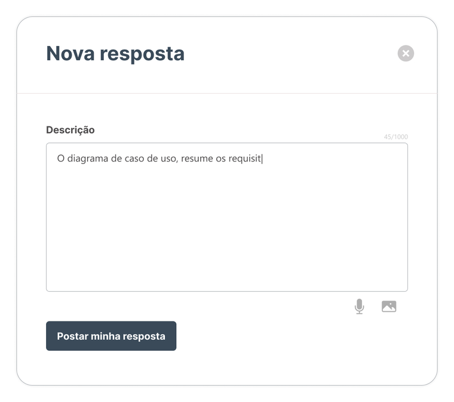
Nova resposta — a outra tela que saiu do papel
Peça 10 · 2020–2022 · Engenharia de Software · de grupo a dupla
Guts: o Airbnb que ganhou nome próprio
Engenharia de Software 1, FATEC Ourinhos, 2020, em home office — professor Marcos Antônio Martuchi. Nasceu com o nome Airbnb, grupo de cinco: Bruna Braz, Gabriel Rigonati, Letícia da Silva Careli, Vitor Gabriel Ramos Campos e Wisley Felipe da Silva. Virou Guts mais adiante, já sem Gabriel Rigonati na lista de autores, e o escopo cresceu junto: de "alugar um imóvel com rapidez" pra "aplicativo para compra e locação de imóveis", com análise de crédito e regras de negócio que a versão Airbnb não tinha.
Os subsistemas
Na versão Airbnb, cada seção tem dono declarado no próprio texto: Letícia assina a introdução e os objetivos — alugar rápido, e pra quem tem imóvel, virar negócio próprio, moradia temporária ou hospedagem. Bruna e Wisley assinam os quatro subsistemas — Gerenciamento de Documentação, de Imóveis, Financeiro e Administrativo. Vitor assina a estrutura de dados. Na virada pra Guts essa autoria por seção desaparece, mas a lista cresce e fica mais concreta: login, cadastro de locatário, locador e imóvel, agendamento de visita, pagamento a prazo ou à vista, localização com redirecionamento pro Google Maps, análise de crédito direto com SPC/Serasa, contrato, suporte por chat ou SAC.
As regras, por papel
O Bizagi guarda três fluxos completos, um por papel, modificados pela última vez em 4 de dezembro de 2020. O locador: login, cadastro do imóvel no app — se houver interesse em anunciar —, agendamento de visita. O locatário: login, busca de imóveis, e — se houver interesse em alugar ou comprar — agendamento de visita em paralelo ao envio de documento pelo app, análise de crédito, e, se estiver tudo certo, compra ou aluguel finalizado com sucesso. A imobiliária fica no meio dos dois: verifica agendamentos com o locador, faz a visita, auxilia no cadastro do imóvel — e, por outro lado, verifica pendência de pagamento dos locatários, cobra, paga o locador. As regras de negócio da versão Guts — fiador, caução, credpago, termo de responsabilidade no pagamento — são a tradução em texto do que esses três fluxogramas já desenhavam em forma.
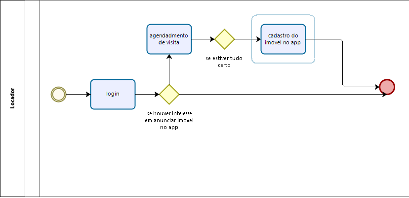
locador — anunciar, agendar, esperar dar certo
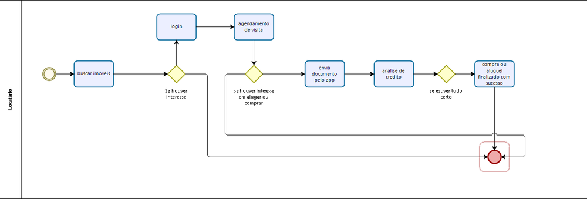
locatário — buscar, visitar, comprovar, esperar a aprovação
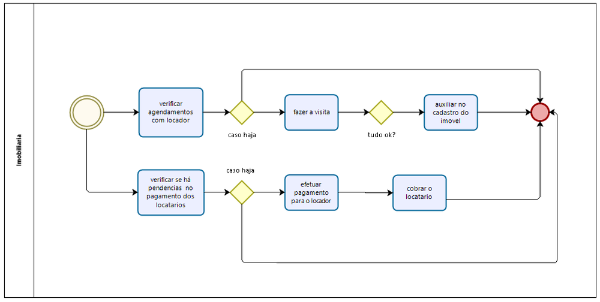
imobiliária — o papel que corre atrás dos outros dois
O protótipo
Criado em 8 de dezembro de 2020: doze telas em formato iPhone 6/7/8, ligadas por dezenove transições de toque — um protótipo clicável de verdade, não só imagem estática. A escolha do modelo teve justificativa própria, registrada à parte: prototipação, porque "nunca desenvolvemos um software antes" e algum requisito "pode faltar" na primeira tentativa. A vantagem é validar — ou não — o que foi levantado; a desvantagem é ter que alterar o sistema de novo, e de novo, até acertar.
entrar
as doze telas de verdade, extraídas do .xd — toque pra navegar de verdade
Quatro títulos, nenhuma linha
No pptx do Guts, Objetivos, Subsistema, Regras de negócio e Estrutura de dados existem só como cabeçalho — nenhum ganhou uma linha de conteúdo abaixo do título. O texto que preenche essas mesmas seções sobreviveu em outro lugar, num .txt solto, não no slide que devia apresentá-las.
2021: o time encolhe, o documento cresce
Três nomes na capa dos documentos de 2021, não mais quatro: Bruna Braz Frazato de Freitas (pesquisadora), Letícia da Silva Careli (programadora web full-stack e UX/UI) e Vitor Gabriel Ramos Campos (engenheiro de software, UX writing e CIO) — Wisley não aparece mais em lugar nenhum. A metodologia vira híbrida, prototipação, espiral e Scrum rodando juntas, citando Pressman (2001), e o mapa mental do projeto é redesenhado entre maio e agosto. Os requisitos amadurecem junto: em maio ainda pensavam por tipo de cadastro — inquilino, proprietário, imóvel, funcionário, com um "?????" nunca preenchido —; em agosto e novembro, viram quatro perfis de acesso — Administrador, Funcionário, Locador, Locatário — e a aprovação de um imóvel ganha três estágios: primeira análise dos documentos, segunda análise com visita e fotos profissionais, e validação final que gera o contrato.
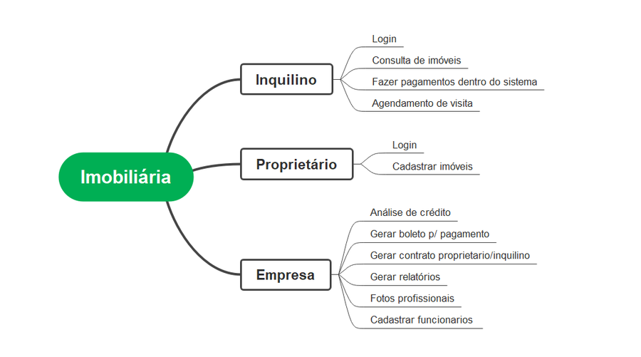
o mapa mental redesenhado — de tecnologia pra papel de usuário
O banco que sonhou vinte tabelas
O documento de novembro de 2021 desenha um banco de dados enorme: tipos de imóvel separados por categoria — apartamento, comercial, rural, terreno —, cada um com suas próprias subdivisões; tabelas pra situação do imóvel, tipo de transação (locação agora, venda "no longo prazo"), documentos enviados, perfil de cada usuário, funcionário, características, instalações, acabamento, lazer, placa de anúncio, registro legal, galeria de fotos guardada no OneDrive. Uma imobiliária inteira, modelada peça por peça antes de existir uma linha de código.
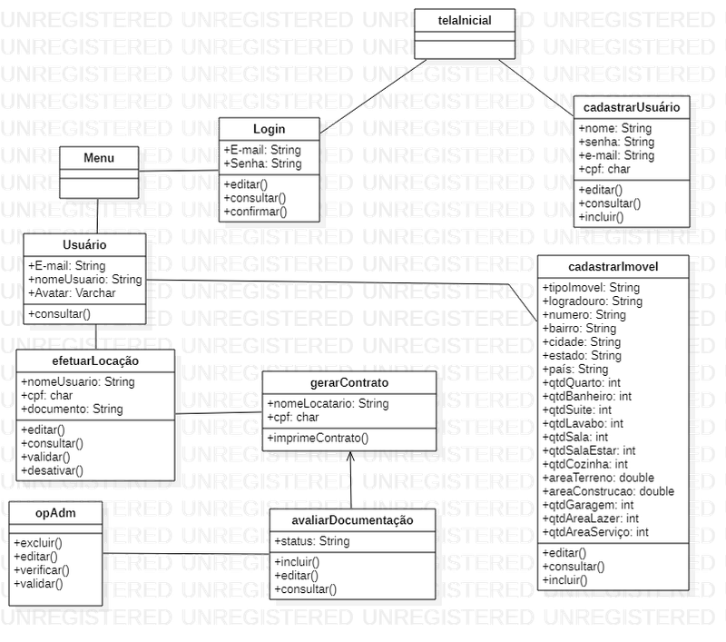
diagrama de classes — o banco sonhado, em UML
O que ficou de pé
Em março de 2022 o documento passa por uma revisão de verdade, não só o nome: quatro diagramas repetidos viram dois, "pagamentos recebidos" some da lista do locador, o terceiro estágio da aprovação vira "validação", não mais "cadastro". A autoria muda de novo — Bruna sai da capa. Sobram Letícia e Vitor. O cronograma de agosto de 2022 é o registro mais honesto do projeto inteiro: cada tarefa concluída está debaixo do nome da Letícia, sozinha; Vitor aparece na correção do documento e nas entregas gerais. O Laravel que rodou de fato tem doze tabelas, bem menos que as vinte sonhadas em novembro — tipos de imóvel unificados em vez de separados por categoria, sem perfil, documento, placa, registro ou galeria como tabela própria. Não é o banco que sonharam. É o banco que deu tempo de fazer.
Tarefa
Responsável
Status
Cadastro de usuário, login, imóvel
Letícia
Concluído
Solicitação de locação
Letícia
Concluído
Busca por cidade, filtros
Letícia
Concluído
Banco de dados e conexão
Letícia
Concluído
Gerar Contrato
—
—
Emitir Relatórios
—
—
As seis telas abaixo vieram de um Laravel de verdade, rodando: subi com SQLite, rodei as dezenove migrations sem um erro sequer, e corrigi uma única linha de compatibilidade — o Carbon esperava um retorno que o PHP 8.3 já não dá. O que ficou aqui são essas capturas, navegáveis pelos mesmos botões que existem na tela: clique em Imóvel, Cliente, Funcionário ou Locação na inicial, ou na seta pra voltar.
login
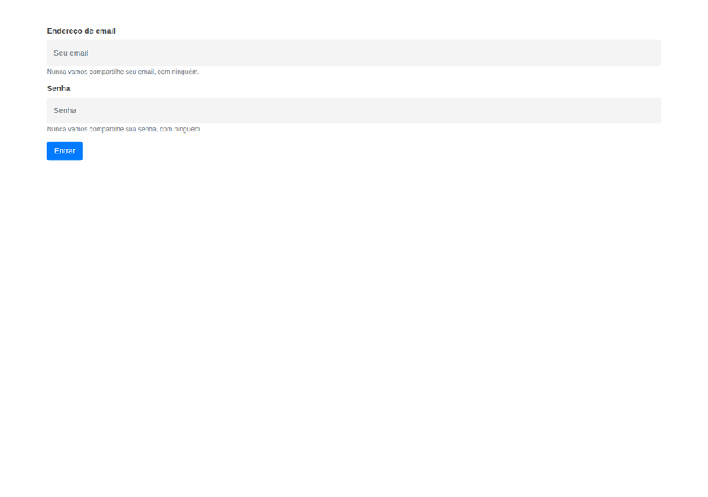
seis telas capturadas do app rodando — clique nos próprios botões da tela pra navegar
Peça 11 · 2020–2023 · oito cadeiras, oito temas
TV LG: oito slides que não se conhecem
Oito apresentações sem nada em comum além de terem sido feitas na FATEC — de junho de 2020 a junho de 2023, três anos entre a primeira e a última. Cinco são só de Vitor, salvas sob os nomes de usuário que foi trocando pelo caminho (GM, depois TV LG). As outras três — outubro e novembro de 2020, dentro de cinco semanas uma da outra — têm Letícia da Silva Careli como autora nos metadados: o mesmo trio que funda a Guts na Peça 10, documentando três trabalhos de grupo diferentes quase em sequência. Cada uma abaixo é o arquivo original, página por página.
Futuro do universo cibernético
23 de junho de 2020 — a mais antiga de todas, seis dias antes da próxima. Caminhos da robótica e da inteligência artificial, quinze slides sem autor declarado no texto, só o registro de criação. O tom é de pesquisa pessoal, não de trabalho encomendado: "dentre as opções, estas foram as que mais me agradaram". Termina admitindo que o assunto rendeu mais perguntas do que o esperado.
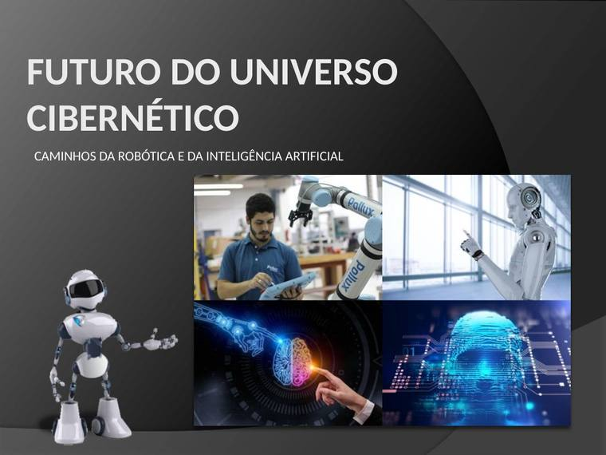
1 / 15
Manutenção de Hardwares/software
29 de junho de 2020. Uma bancada de manutenção de computadores, dezesseis slides — cuidados preventivos, ferramentas corretivas numeradas de uma a dezesseis, chave de fenda a câmera térmica. Os últimos slides de imagem foram passados por um upscaler (waifu2x) antes de entrar na apresentação. "Aluno: Vitor Gabriel Ramos Campos", assinado no final, não no início.
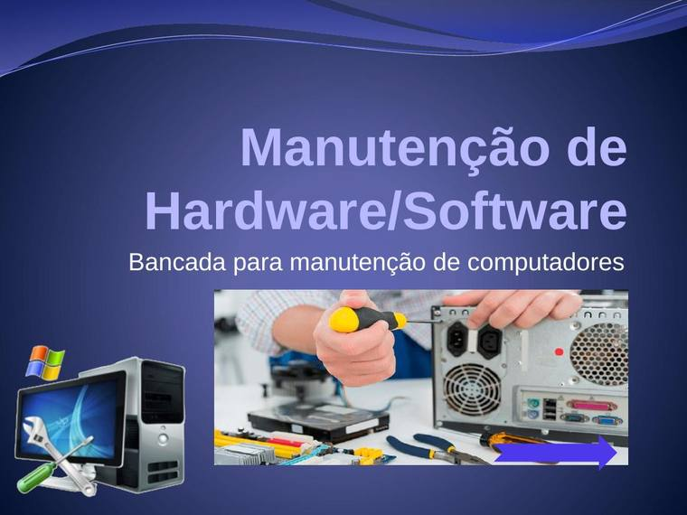
1 / 16
IoT
8 de outubro de 2020, modificada seis dias depois. Vinte e dois slides — a maior apresentação desta peça: o que é IoT, exemplos (um relógio comum ao lado de um smartwatch, uma geladeira comum ao lado de uma inteligente), tecnologias, o ponto fraco dos sensores, segurança, considerações finais, cinco referências. Grupo: Letícia da Silva Careli, Wisley Felipe da Silva, Vitor e Gabriel Rigonati — o mesmo quarteto que vira Airbnb na Peça 10, antes de virar Guts.
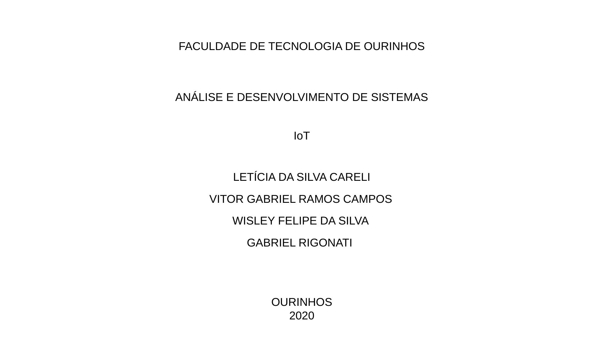
1 / 22
Gestão de Custos do Vestibular
5 de novembro de 2020. Oito slides que não são bem uma apresentação — é um exercício de SCRUM: backlog de nove itens pra um sistema de gestão de custos do próprio vestibular da FATEC Ourinhos, dividido em quatro sprints. Vitor aparece creditado como Product Owner. Grupo: Ana Carolina Cardozo, Letícia, Wisley e Vitor — o trio de sempre, mais uma.
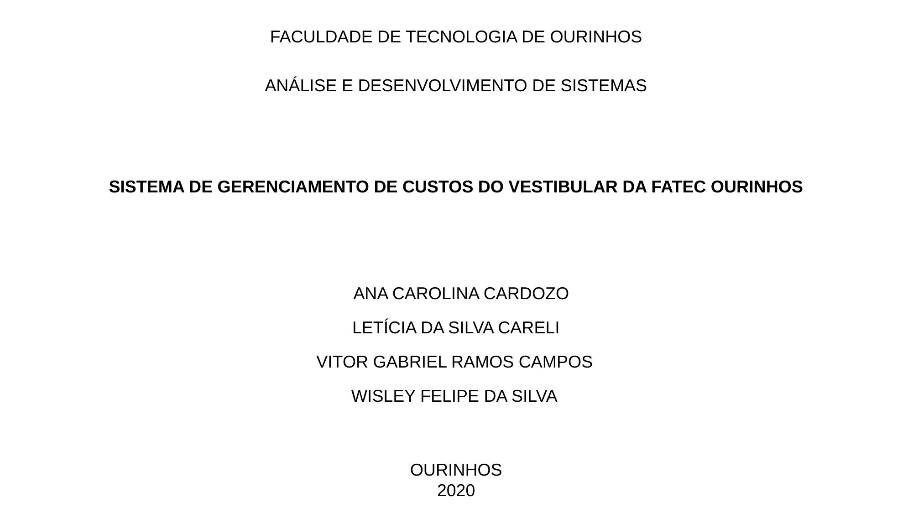
1 / 8
Redação Inquieta — Capítulo Método
13 de novembro de 2020, modificada no dia seguinte. Onze slides sobre o capítulo "Método" do livro de Gustavo Bernardo — silogismo, dilema, redução ao absurdo, indução, dedução, os limites de cada uma, o que é verdade. Os últimos dois slides de conteúdo são assinados só "Vitor Gabriel Ramos Campos", separado do resto do grupo, como se aquele trecho específico fosse dele.
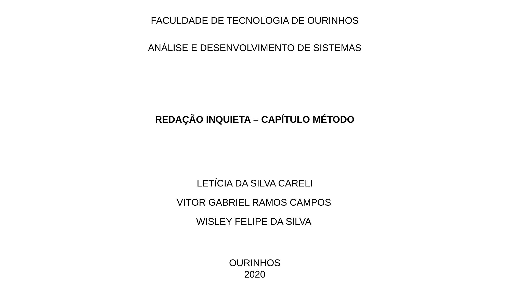
1 / 11
Análise de segurança em Cloud Computing
4 de outubro de 2022, dois anos depois — 5º ADS, vespertino, ISG003. Em dupla com Jéssica Aparecida Pessoa, a mesma colaboradora da RescueTechSolutions na peça 04. Onze slides sobre o que é a nuvem, como funciona, riscos, e os três tipos de serviço — SaaS, PaaS, IaaS — desenhados como pirâmide.
1 / 11
WebSocket
2 de dezembro de 2022 — a única solo deste grupo de quatro mais recente, mais de dois anos depois das três de 2020. Cinco slides sobre o protocolo: o que é, como funciona, vantagens, uma referência citada. Criada sob "GM", modificada duas horas depois sob "TV LG" — a mesma dupla de nomes que a Equipe, logo abaixo, registra em abril de 2023. As datas não deveriam coexistir se a troca fosse única e definitiva: ou o nome do Office não anda junto com o do Windows, ou trocou mais de uma vez. Fica em aberto.
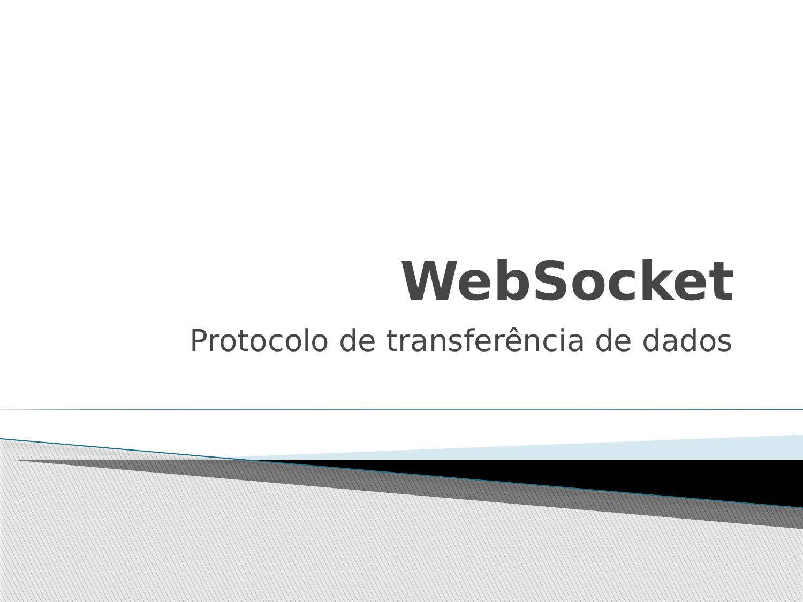
1 / 5
Equipe: formação e evolução
Criada em 30 de abril de 2023 sob "GM" — o nome antigo do usuário de Vitor no computador, antes de virar "TV LG" —, e modificada por último em 19 de junho, quase dois meses depois. Oito slides sobre teoria de gestão de equipes: papéis, metas, comunicação, avaliação de desempenho. A mais recente de todas, e a segunda a guardar o rastro dessa troca de nome de usuário.
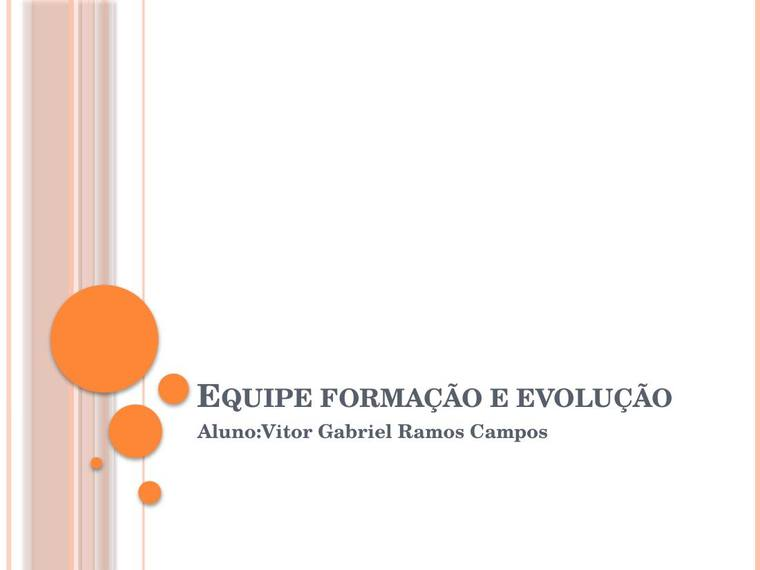
1 / 8
Peça 12 · 2022 · Banco de Dados · ILP540-T
Da Álgebra Relacional ao SQL, expressão por expressão
ILP540-T, vespertino, 2022.2 — mesmo semestre da peça 11. A base usada nos exercícios era compartilhada por toda a turma: 86 tabelas cobrindo banco, saúde, biblioteca, oficina, varejo, RH e transporte ao mesmo tempo, um esqueleto genérico grande o bastante pra qualquer pergunta caber nele. O que segue abaixo é só o que Vitor escreveu — as traduções, os gatilhos, o exercício de achar o erro —, não o material do professor.
Álgebra Relacional → SQL
O enunciado pedia tradução expressão por expressão, não só o resultado final. Um dos casos mais completos: quais professores ministram todas as disciplinas — um problema de divisão relacional, resolvido em sete tabelas temporárias encadeadas. Produto cartesiano entre professores e disciplinas, subtração do que já está atribuído, e uma segunda subtração pra sobrar só quem dá conta de tudo.
pratica-sql-vitor.pdf — questão 4
CREATE TEMPORARY TABLE P AS (SELECT idprofessor as professorid FROM professores);
CREATE TEMPORARY TABLE D AS (SELECT iddisciplina as disciplinaid FROM disciplinas);
CREATE TEMPORARY TABLE PD AS (SELECT professorid, disciplinaid FROM atribuicoes);
-- produto cartesiano: todo professor cruzado com toda disciplina
CREATE TEMPORARY TABLE A AS (SELECT * FROM P CROSS JOIN D);
-- subtração: tira do produto cartesiano o que já está atribuído de fato
CREATE TEMPORARY TABLE B AS (SELECT * FROM A EXCEPT (SELECT * FROM PD));
CREATE TEMPORARY TABLE C AS (SELECT professorid FROM B);
-- segunda subtração: quem sobra em P depois de tirar quem tem alguma falta em C
-- são os professores sem NENHUMA disciplina faltando — ou seja, dão todas
CREATE TEMPORARY TABLE E AS (SELECT * FROM P EXCEPT (SELECT * FROM C));
SELECT idprofessor, txnomeprofessor
FROM E
INNER JOIN professores ON E.professorid = professores.idprofessor;
Os gatilhos
Dois gatilhos em PL/pgSQL escritos sem o passo a passo guiado que o professor dava nos exercícios modelo — só a solução direta. Os dois usam raise notice, não raise exception: o aviso aparece no console, mas o INSERT segue de qualquer jeito, mesmo quando a condição falha.
gatilho08.sql — limite de sinistros por veículo
CREATE OR REPLACE FUNCTION public.sinistrosBI()
RETURNS trigger
LANGUAGE 'plpgsql'
AS $BODY$
declare
vQtdSinistro smallint;
begin
select count(*) into vQtdSinistro
from sinistros
where veiculoid = NEW.veiculoid;
if (vQtdSinistro >= 3) then
raise notice 'O veículo (%) já atingiu o limite de sinistros permitido', NEW.veiculoid;
end if;
return new;
end;
$BODY$;
gatilho11.sql — disponibilidade mínima na biblioteca
CREATE OR REPLACE FUNCTION public.emprestimosBI()
RETURNS trigger
LANGUAGE 'plpgsql'
AS $BODY$
declare
vQtdDisponivel smallint;
begin
select qtdisponivel into vQtdDisponivel
from livros
where idlivro = NEW.livroid;
if (vQtdDisponivel <= 0) then
raise notice 'O livro (%) não tem exemplares disponíveis', NEW.livroid;
end if;
return new;
end;
$BODY$;
Achar o erro
O exercício 16 dá um comando pronto — "de outro analista", diz o enunciado — tentando resolver uma divisão relacional entre oficinas, serviços e o que cada oficina presta. O comando está errado, e a tarefa é achar onde. O erro: MINUS não existe em PostgreSQL — é sintaxe de Oracle. A correção troca a palavra por except, e o resto do comando, que já estava certo, continua igual.
a linha que muda
-- errado (sintaxe Oracle, não existe em PostgreSQL):
SELECT * FROM A MINUS (SELECT * FROM ACAOSEMP)
-- corrigido:
SELECT * FROM A except (SELECT * FROM ACAOSEMP)
Peça 13 · março 2023 · 6ADS
Lógica de Programação: sequencial, seleção, repetição, vetores
Antes do Rosalind, teve isso: uma lista de quarenta exercícios pra aprender a pensar em Python — quatro blocos, cada um construindo sobre o anterior. Impresso do Colab em 1º de março de 2023, duas semanas antes do primeiro problema do Rosalind. Um exercício de cada categoria mostrado aqui; o resto ficou de fora, mas não é menos real.
Estrutura Sequencial — 4 exercícios
Questão 3 — salário do funcionário
salario_base = float(input("Digite o salário-base do funcionário: "))
gratificacao = salario_base * 0.05
salario_bruto = salario_base + gratificacao
imposto = salario_bruto * 0.07
salario_liquido = salario_bruto - imposto
print("O salário-base é R$", salario_base)
print("A gratificação é R$", gratificacao)
print("O imposto é R$", imposto)
print("O salário a receber é R$", salario_liquido)
saída
Digite o salário-base do funcionário: 1300
O salário-base é R$ 1300.0
A gratificação é R$ 65.0
O imposto é R$ 95.55000000000001
O salário a receber é R$ 1269.45
O imposto vem com onze casas decimais atrás — float fazendo o que float faz. Ninguém corrigiu; o print saiu assim e ficou assim.
Estrutura de Seleção — 10 exercícios
Questão 8 — lanchonete
codigo = int(input("Digite o código do item: "))
quantidade = int(input("Digite a quantidade: "))
if codigo == 100:
preco = 1.20
nome = "Cachorro Quente"
elif codigo == 101:
preco = 1.30
nome = "Bauru Simples"
elif codigo == 102:
preco = 1.50
nome = "Bauru com Ovo"
elif codigo == 103:
preco = 1.20
nome = "Hamburguer"
elif codigo == 104:
preco = 1.30
nome = "Cheeseburguer"
elif codigo == 105:
preco = 1.00
nome = "Refrigerante"
else:
print("Código inválido!")
preco = 0
nome = ""
total = preco * quantidade
print(f"{quantidade}x {nome} - Total: R$ {total:.2f}")
saída
Digite o código do item: 100
Digite a quantidade: 5
5x Cachorro Quente - Total: R$ 6.00
Um cardápio de seis itens dentro de uma cadeia de elif — a mesma estrutura da Questão 9, que reajusta salário por cargo e, no teste registrado, usa "101" tanto pro salário quanto pro código do cargo. Coincidência de quem só queria ver se rodava.
Estrutura de Repetição — 21 exercícios
Questão 20 — Chico e Juca
altura_chico = 1.50
altura_juca = 1.10
crescimento_chico = 0.02
crescimento_juca = 0.03
anos = 0
while altura_juca <= altura_chico:
altura_chico += crescimento_chico
altura_juca += crescimento_juca
anos += 1
print(f'Serão necessários {anos} anos para Juca ser maior que Chico.')
saída
Serão necessários 41 anos para Juca ser maior que Chico.
O bloco mais longo da lista — de tabuada e fatorial a checagem de número primo por raiz quadrada. Chico e Juca crescendo a taxas diferentes até um ultrapassar o outro é só o mais bem-humorado dos vinte e um.
Vetores — 4 exercícios
Questão 4 — sena, quina, quadra
gabarito = []
for i in range(6):
num = int(input("Digite o número do gabarito (entre 1 e 60): "))
gabarito.append(num)
aposta = []
for i in range(10):
num = int(input("Digite um número da aposta (entre 1 e 60): "))
aposta.append(num)
acertos = 0
for num in aposta:
if num in gabarito:
acertos += 1
print("Você acertou", acertos, "números.")
if acertos == 6:
print("Parabéns! Você fez a sena!")
elif acertos == 5:
print("Você fez a quina!")
elif acertos == 4:
print("Você fez a quadra!")
else:
print("Não foi desta vez...")
saída
Você acertou 1 números.
Não foi desta vez...
Uma sena simulada — seis números de gabarito contra dez de aposta, um acerto só no teste. O in comparando lista contra lista é o mesmo instinto que, um mês depois, vira busca por nome na Peça 14.
Peça 14 · abril 2023 · Programação Orientada a Objetos
Conta: uma classe, dez saldos
Um mês depois do 6ADS (Peça 13), o primeiro class. Uma conta bancária simplificada — nome e saldo, nada de métodos além do construtor — instanciada dez vezes e buscada por nome numa lista. É pouco, mas é o suficiente pra virar o gancho de tudo que a POO ainda ia exigir depois.
Conta Python e POO.ipynb
#Class Conta
class Conta:
def __init__(self, nome, saldo):
self.nome = nome
self.saldo = saldo
conta1 = Conta("Geraldo",30000)
conta2 = Conta("Tálita",12000)
conta3 = Conta("Jessica",12000)
conta4 = Conta("Silvana",30000)
conta5 = Conta("Vitor",1500)
conta6 = Conta("Nauam",15000)
conta7 = Conta("Bruna",15000)
conta8 = Conta("Debora",14000)
conta9 = Conta("André",16000)
conta10 = Conta("João",17000)
lista_contas = [conta1, conta2, conta3, conta4, conta5, conta6, conta7, conta8, conta9, conta10]
nome_cliente = input("Escreva o nome do cliente: ")
saldo_cliente = None
for conta in lista_contas:
if conta.nome == nome_cliente:
saldo_cliente = conta.saldo
break
if saldo_cliente:
print(f"O saldo de {nome_cliente} é de R${saldo_cliente}")
else:
print(f"Cliente {nome_cliente} não encontrado")
saída
Escreva o nome do cliente: Tálita
O saldo de Tálita é de R$12000
Duas das dez contas têm nome de gente de verdade: "Jessica" e "Nauam" — os mesmos primeiros nomes de Jéssica Aparecida Pessoa e Nauam Moises da Cruz Garcia, que seis meses depois virariam colegas de grupo na RescueTechSolutions (Peça 04). Em abril, ainda são só nomes emprestados pra um exercício.
Peça 15 · junho de 2021 · Economia
Oferta e demanda: onde as curvas se cruzam
A única peça inteira em R. Um projeto RStudio guardado como .rar — histórico de sessão, cache, workspace, e o script principal salvo, por engano ou não, dentro do arquivo que deveria só guardar as configurações do projeto (Economia.Rproj). O que importa: duas curvas bézier representando oferta e demanda, o ponto onde elas se cruzam calculado primeiro à mão, depois generalizado numa função. 6 de junho de 2021 — mais velho que quase tudo neste museu, atrás só da URI e da raiz da Guts, as duas de 2020.
Azul sobe, vermelho desce, uniroot() encontra onde as duas funções de interpolação empatam — o ponto de equilíbrio, em termos de mercado. A primeira versão do gráfico só desenhava as curvas; essa já resolve a interseção.
A função reaproveita a mesma lógica pra qualquer par de curvas — chamada duas vezes contra uma segunda curva de demanda, os dois pontos de equilíbrio lado a lado no mesmo gráfico. Entre a primeira versão e essa, seis blocos de ggplot a mais; o .Rhistory guarda todos.
Peça 16 · agosto de 2021 – novembro de 2022 · Programação Orientada a Objetos
O ano de Java
Oitenta e dois arquivos, cerca de dezoito pastas de projeto, guardados numa pasta batizada com o nome do professor, provavelmente — "Jean" não aparece em nenhum comentário de código nem nos metadados da máquina, só no nome da pasta; o resto (anotação à mão, contas de usuário genéricas) aponta sempre pro mesmo autor de todo o resto deste museu. Quinze meses de aula, de agosto de 2021 a novembro de 2022 — antes do Rosalind, antes do 6ADS, antes da Conta em Python da Peça 14. Não cabe tudo aqui; o que segue é uma amostra.
O começo — 20 de agosto de 2021
Lista 1 Java / EX1.java
import javax.swing.JOptionPane;
public class EX1 {
public static void main(String args[]) {
int i,previous,after;
i = Integer.parseInt(JOptionPane.showInputDialog("Digite um valor"));
previous = i - 1;
after = i + 1 ;
JOptionPane.showMessageDialog(null, previous);
JOptionPane.showMessageDialog(null, after);
}
}
A data mais antiga desta peça, e a segunda mais antiga do museu inteiro — só a URI vem antes. E o problema é literalmente o primeiro exercício do 6ADS (Peça 13): antecessor e sucessor de um número. Ali, dezenove meses depois, em Python com input(); aqui, em Java, com caixas de diálogo do Swing. EX2, na mesma lista, converte polegadas em centímetros com o mesmo fator 2,54 da Questão 2 do 6ADS; EX15 calcula fatorial, um ano antes da Questão 21. O mesmo caderno de exercícios, reaberto em outra linguagem.
Contas bancárias — maio de 2022
Conta.java
public class Conta {
private String nome;
private String endereço;
private String rg;
private String telefone;
private String agência;
private String numero;
private Double saldo;
public String getNome() {
return nome;
}
public void setNome(String nome) {
this.nome = nome;
}
public String getEndereço() {
return endereço;
}
public void setEndereço(String endereço) {
this.endereço = endereço;
}
public String getRg() {
return rg;
}
public void setRg(String rg) {
this.rg = rg;
}
public String getTelefone() {
return telefone;
}
public void setTelefone(String telefone) {
this.telefone = telefone;
}
public String getAgência() {
return agência;
}
public void setAgência(String agência) {
this.agência = agência;
}
public String getNumero() {
return numero;
}
public void setNumero(String numero) {
this.numero = numero;
}
public Double getSaldo() {
return saldo;
}
public void setSaldo(Double saldo) {
this.saldo = saldo;
}
}
ContaCorrente.java / Poupanca.java
public class ContaCorrente extends Conta {
private Double limite;
public Double getLimite() {
return limite;
}
public void setLimite(Double limite) {
this.limite = limite;
}
}
public class Poupança {
private Double rendimento;
public Double getRendimento() {
return rendimento;
}
public void setRendimento(Double rendimento) {
this.rendimento = rendimento;
}
}
ContaCorrente extends Conta — certo. Poupança devia ter herdado também, mas o extends Conta nunca foi escrito: do jeito que está, uma poupança não tem nome nem saldo, só rendimento. Onze meses depois, a mesma ideia — uma classe Conta, saldo buscado por nome — volta em Python na Peça 14, dessa vez sem herança nenhuma, só instâncias soltas numa lista.
Herança com formulário — novembro de 2022
Pessoa.java / Amigo.java
public class Pessoa {
private String nome;
private String sexo;
private int idade;
public String getNome() {
return nome;
}
public void setNome(String nome) {
this.nome = nome;
}
public String getSexo() {
return sexo;
}
public void setSexo(String sexo) {
this.sexo = sexo;
}
public int getIdade() {
return idade;
}
public void setIdade(int idade) {
this.idade = idade;
}
}
public class Amigo {
private String dtaniver;
public String getDtaniver() {
return dtaniver;
}
public void setDtaniver(String dtaniver) {
this.dtaniver = dtaniver;
}
}
De novo: Amigo devia estender Pessoa e não estende — a mesma lacuna da Poupança, em outra pasta, seis meses depois. O formulário (Tela.java, gerado pelo editor visual do NetBeans) trata os quatro campos como se fossem de uma coisa só; as classes, sozinhas, discordam.
Tela.java — o botão "Exibir"
private void jButton1ActionPerformed(java.awt.event.ActionEvent evt) {
String nome = txtNome.getText();
String sexo = txtSexo.getText();
int idade = (Integer.parseInt(txtIdade.getText()));
String dtaniver = txtDtaniver.getText();
JOptionPane.showConfirmDialog(rootPane, nome + "\n" + sexo + "\n" + idade + "\n" + dtaniver);
}
O resto do arquivo — mais de cem linhas — é initComponents(), regravado automaticamente a cada arraste de campo no editor visual. Só esse trecho, o clique do botão, foi escrito à mão.
Associação — 29 de novembro de 2022
ExecutaCodigo.java
public class ExecutaCodigo {
public static void main (String[] args) {
Inquilino i = new Inquilino("Pedro", "29739872", 2.800, "Enfermeiro");
i.status();
Proprietario p = new Proprietario("Julio", "1926916129" ,"Ana Paula");
p.status();
Contrato c = new Contrato("5 de Janeiro de 2023");
c.status();
Imovel m = new Imovel(5.000, "São Pedro", "24", "Jardim Real", "Londrina");
m.status();
}
}
Pessoa, Endereco, Inquilino, Proprietario, Imovel, Contrato — seis classes, mas o que a pasta chama de "associação" nunca chega a acontecer: os quatro objetos aqui em cima são criados e impressos lado a lado, sem nenhum se referenciar — o contrato não sabe qual imóvel é dele, o imóvel não sabe quem é o proprietário. A ponte, a associação de verdade, ainda por vir. E o vocabulário — inquilino, proprietário, imóvel — é o mesmo que a Peça 10 registra como o primeiro rascunho de requisitos da Guts, seis meses antes.
Ecos
Duas lacunas de herança, meio ano de distância uma da outra (Poupança/Conta em maio, Amigo/Pessoa em novembro) — o mesmo hábito de escrever a classe filha sem lembrar do extends. Três exercícios repetidos em Python, um a dois anos depois (antecessor/sucessor, polegadas, fatorial). Um domínio inteiro — morar, alugar, ser dono — ensaiado numa aula de POO seis meses antes de virar a Guts de verdade. Nada disso foi planejado assim; é só o que sobra quando quinze meses de aula ficam guardados numa pasta só.
Peça 17 · Governança de TI
COBIT e ITIL: pontes e bibliotecas
Dois frameworks de governança de TI, dois trabalhos diferentes — o COBIT com dez perguntas dissertativas, o ITIL com estudos de caso curtos, cada um pedindo qual processo resolve qual situação. Nenhum dos dois tem código ou print de terminal, só texto corrido: as duas primeiras peças deste museu que são inteiramente respostas escritas. O assunto ecoa direto na Peça 05, que já guarda um exemplo solto de gerenciamento de riscos — os dois lados da mesma disciplina, controle e risco, vistos de ângulos diferentes.
COBIT
2 — O que é o COBIT
"COBIT é uma metodologia para a Governança de TI que ajuda a estabelecer uma ponte entre os riscos do negócio, as necessidades de controle e questões técnicas. Provê as melhores práticas, através de um framework para domínio e processos, e apresenta atividades em uma forma lógica e gerenciável."
7 — Os quatro domínios
Alinhar, Planejar e Organizar (APO) — plano estratégico de TI, arquitetura da informação, direção tecnológica, riscos, projetos, qualidade.
Construir, Adquirir e Implementar (BAI) — soluções de automação, softwares, infraestrutura tecnológica, mudanças.
Aplicações — sistemas automatizados e procedimentos manuais que processam informações.
Informação — o dado em todas as formas de entrada, processamento e saída.
Infraestrutura — hardware, sistemas operacionais, bancos de dados, rede: o que possibilita o processamento.
Pessoas — quem planeja, organiza, entrega, suporta, monitora. Internas, terceirizadas ou sob demanda.
10 — Os sete critérios da informação
Eficácia — relevância, disponibilidade em prazo, formato adequado.
Eficiência — a melhor forma de utilização dos recursos.
Confidencialidade — proteção contra divulgação não autorizada.
Integridade — precisão e validade de acordo com padrões estabelecidos.
Disponibilidade — a informação no momento em que é requerida.
Conformidade — cumprimento de leis, regulamentos, cláusulas contratuais.
Confiabilidade — informação apropriada pra tomada de decisão e relatórios.
ITIL
Gerenciamento de Incidentes
O cenário: administradores de rede sobrecarregados, afogados em contato direto de usuário. A resposta: "Centralização e padronização do processo de relato de incidentes... evita que os usuários entrem em contato diretamente com os administradores de rede" — e escalonamento por prioridade, pra separar o crítico do que pode esperar.
A biblioteca Service Quality
Gerenciamento de Qualidade de Serviço — define e monitora padrões de qualidade, métricas, melhoria contínua.
Gerenciamento de Nível de Serviço — acordos de nível de serviço, metas de desempenho, resolução de problemas de qualidade.
Gerenciamento de Continuidade de Serviço de TI — recuperação de serviços em interrupções ou desastres.
Gerenciamento de Disponibilidade — garante que os serviços estejam disponíveis quando necessários, com testes de recuperação.
ISO 20.000, a partir de uma notícia real
O exercício parte de uma notícia de 2014 sobre a Sonda IT conquistando a certificação ISO/IEC 20000. A resposta situa os dois no mesmo mapa: "a ITIL fornece uma abordagem e um conjunto de melhores práticas... e a ISO/IEC 20000 é uma norma que estabelece os requisitos para a implementação efetiva" — a ITIL não é norma nenhuma, é o caminho que várias empresas usam pra chegar lá.
Peça 18 · junho de 2020 · Planilhas
TV LG aprende a fazer gráfico
Duas planilhas, a mesma assinatura "TV LG" de sempre, três e onze dias de diferença uma da outra — 3 e 14 de junho de 2020, mais cedo que qualquer coisa hoje na Peça 11. A primeira é um exercício de livraria com fórmulas de referência cruzada; a segunda aba dela não tenta esconder que são três assuntos sem ligação nenhuma. A segunda planilha é inteira sobre anime, cinco gráficos, cada um com sua própria imagem de fundo. As tabelas abaixo são valores exatos, extraídos direto do arquivo; os gráficos são capturas do original — o parser mais rigoroso rejeita um deles, XML de fonte corrompido, mas os dados continuam de pé.
Atv10_06_2020 — Livraria
Plan1 — código do gênero, autor, editora, livro
Cód. Livro
Título
Gênero
Autor
Editora
Cidade da Editora
Preço
Páginas
100
Cry For Eternity
Comédia
Nathan
Paradox
Risigin City
R$ 50
200
101
Kansas
Horror
Alexia
Slice
Silent Hill
R$ 46
162
102
Toxicity
Suspense
George
Golden Era
Winterfell
R$ 60
230
103
Dallas
Aventura
David
Garden
Metropolis
R$ 43
150
150
Sins Of Chaos
Drama
Luci
Oasis
Central City
R$ 93
666
160
Winchester's Nf
Investigação
Arya
Heaven
Star City
R$ 47
333
Trinta e seis fórmulas de referência cruzada por trás dessa tabela — cada célula puxando de uma das três tabelas de apoio (gênero, autor, editora) com =A2, não digitado de novo. As editoras moram em Metropolis, Central City, Star City, Risigin City, Silent Hill e Winterfell — DC, Silent Hill e Game of Thrones, sem aviso nenhum de que são referências. E "Winchester's Nf" fica cortado assim mesmo, sem completar o nome.
Atv10_06_2020 — sem eixo nenhum
A segunda aba não tenta esconder que são três assuntos sem ligação: quantas séries de cada gênero foram vistas, quantos eventos naturais aconteceram por ano, e os atributos de RPG de um personagem só. Cinco gráficos pra três tabelas pequenas.
Gênero
Nº de Séries Vistas
Suspense
4
Comédia
6
Investigação
2
Aventura
3
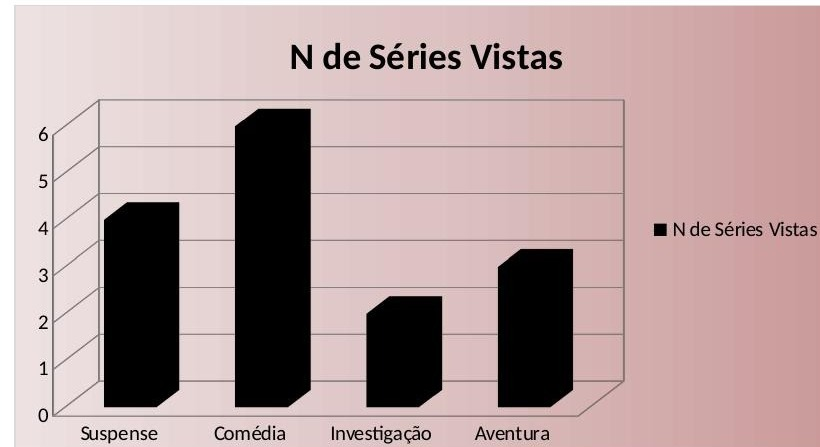
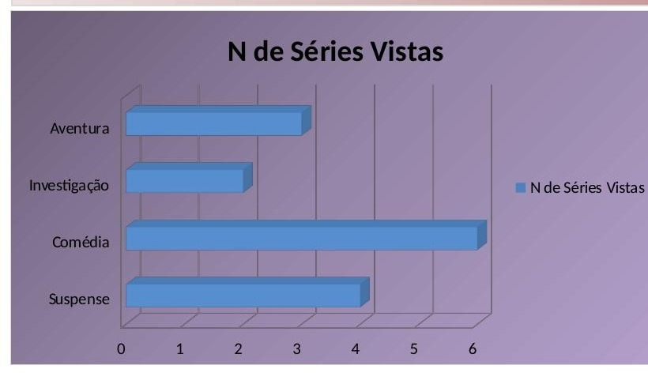
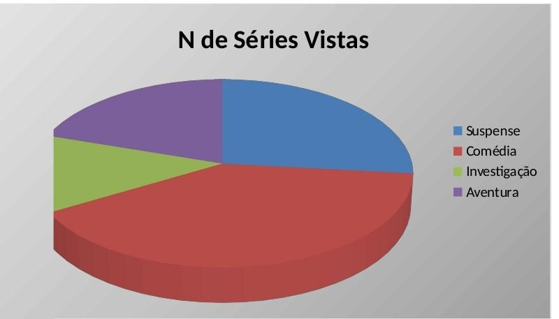
Ano
Erupção
Tsunami
Tornados
Terremotos
2012
2
3
4
6
2013
1
2
3
3
2014
1
1
4
5
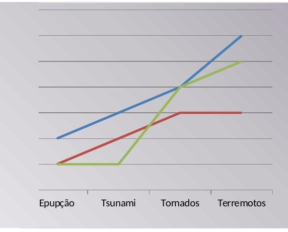
Velocidade
Força
Vida
Defesa
Ataque
20
50
500
130
150
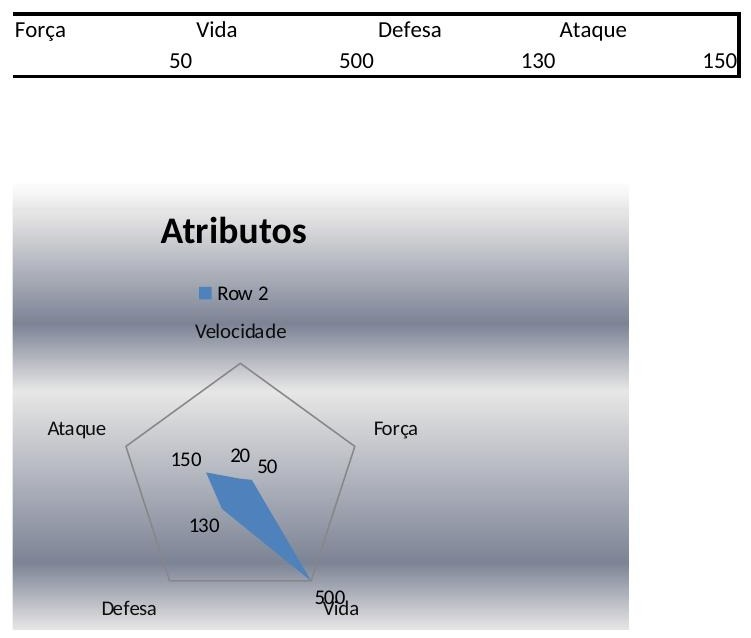
O gráfico de linha herdou o título "N de Séries Vistas" do primeiro gráfico, e ninguém trocou — ele mostra eventos naturais. O radar de atributos não tem nome de personagem, só "Row 2": o rótulo padrão do Excel pra uma linha sem cabeçalho próprio.
TabelasDOV — Completos e Lançamentos
3 de junho de 2020, onze dias antes do Atv10_06 — a mais antiga desta peça. Cinco abas, todas sobre anime, cada gráfico com uma imagem de fundo diferente por trás — um catálogo pessoal disfarçado de exercício de aula.
Tipo de anime
Completos
Shounen
13
Comédia
11
Romance
16
Drama
2
Mistério
8
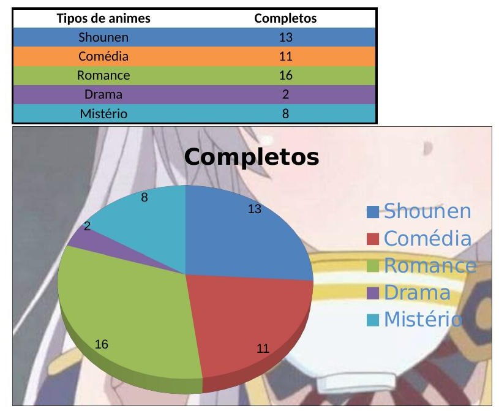
Ano
Primavera
Verão
Outono
Inverno
2020
26
32
0
0
2019
27
30
30
22
2018
23
31
33
18
2017
28
29
27
19
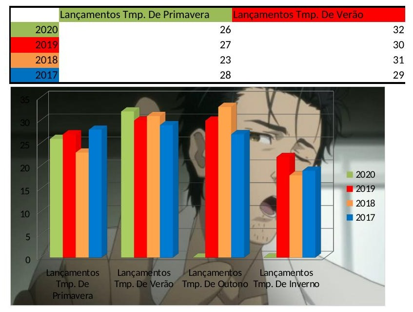
2020 tem zero em Outono e Inverno — não é dado perdido, é o calendário: a planilha foi salva em junho, e essas duas estações daquele ano ainda não tinham acontecido.
TabelasDOV — Visualizações e Atributos
Anime
Média de Visualizações
Berserk
247.410
Kuroko no Basket
206.643
Oregairu
207.693
Erased
96.971
Steins;Gate
204.088
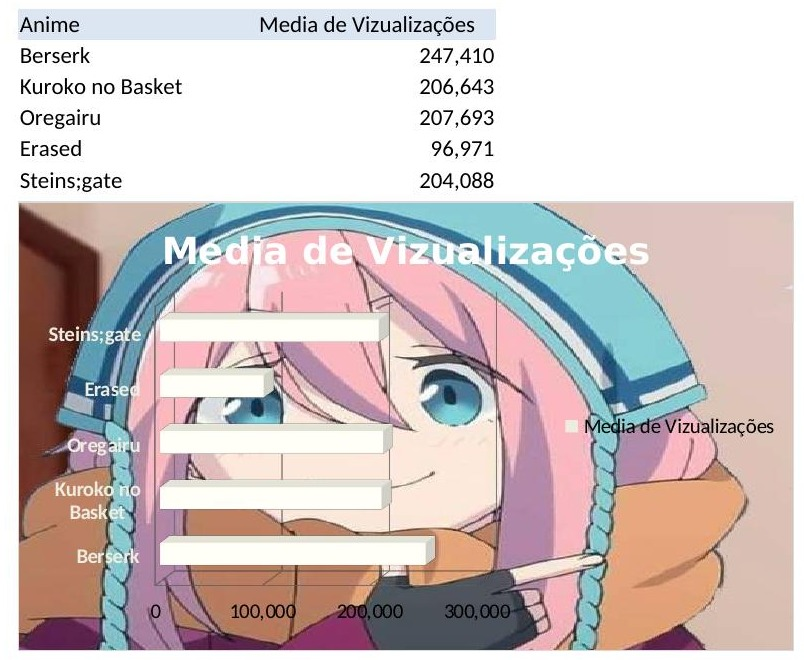
Ataque
Defesa
Vida
Resistência
Força Base
Personagem 1
400
320
1000
360
20
Personagem 2
320
240
900
290
15
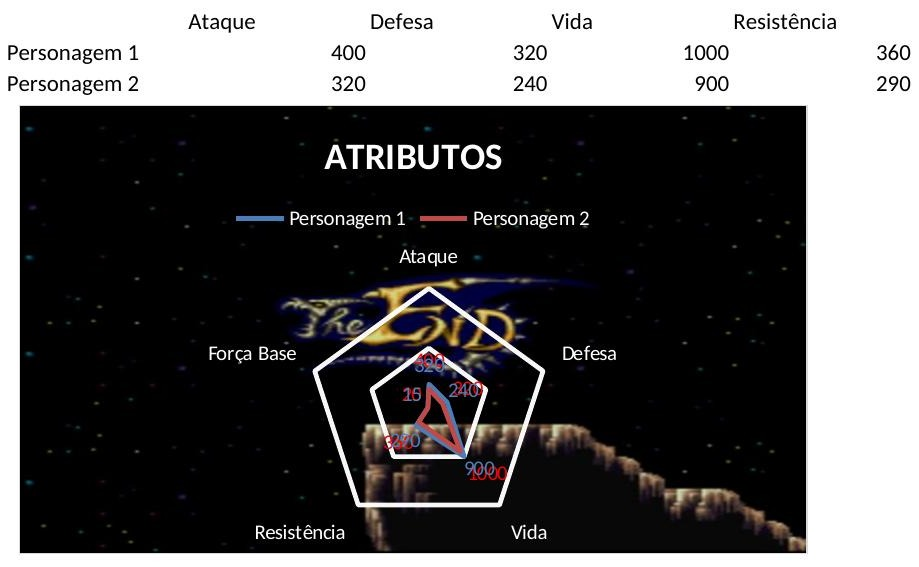
Berserk na frente por quase quarenta mil visualizações. Os dois personagens do radar não têm nome — só "Personagem 1" e "Personagem 2" — mas o fundo atrás deles diz "The End".
TabelasDOV — Número de Animes completos por ano
2020
2019
2018
2017
2016
2015
2014
100
80
60
40
30
20
10
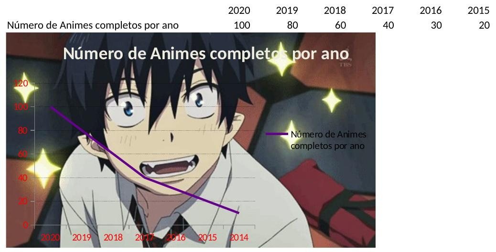
Não é um registro real — a progressão é limpa demais (100, 80, 60, 40, 30, 20, 10) pra ser contagem de verdade. É só o quinto gráfico precisando de dado, e um dado inventado que serve bem o suficiente.